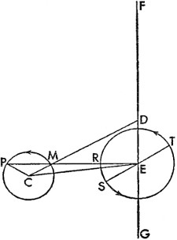
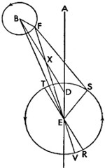
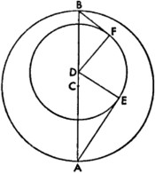

2. Eskilerin Teorisine Göre Bu Gezegenlerin Düzenli ve Görünen Hareketlerinin Kanıtı
Gezegenlerin hareketleri bu şekilde ortaya konduktan sonra, şimdi de görünen düzensizliğe bakalım. Dünya'nın hareketsiz olduğunu kabul eden eski matematikçiler Satürn, Jüpiter, Mars ve Venüs ile ilgili olarak dış tekerleme eğrilerini içeren dış merkezli çemberlerin ve dış tekerleme eğrisiyle dış tekerleme eğrisindeki gezegenin bağlı olduğu başka bir dış merkezli çemberin düzenli hareket etmesi gerektiğini düşünüyorlardı.
Buna uygun olarak, AB bir dış merkezli çember; C de merkezi olsun. ABC, çapı; üzerindeki D de Dünya'nın merkezi olsun; buna göre A, yeröte, B de yerberi olur. DC, E noktasında ortadan kesilsin; merkezi E olmak üzere diğer dış merkezli FG çemberi, ilk çizilen dış merkezli çemberin içinden geçsin. H, bu dış merkezli çemberde bir nokta; aynı zamanda çizilen IK dış tekerleme eğrisinin de merkezi olsun. Bunun merkezi boyunca IHKC ve benzer şekilde LHME düz çizgileri çizilsin. Bu durumda gezegenin enlemlerinden hareketle dış merkezli çemberlerin, ekliptiğin düzlemine ve benzer şekilde dış tekerleme eğrisinin de dış merkezli çemberin düzlemine eğimli olduğu anlaşılsın; fakat bütün bunlar, gösterimi kolay olması açısından bir düzlemdeymiş gibi sunulur. Bu yüzden eskiler, E ve C noktalarıyla birlikte tüm bu düzlemin, ekliptiğin merkezi olan D'nin etrafında, sabit yıldızlar küresinin hareketiyle döndüğünü söylemişler; bununla da bu noktaların sabit yıldızlar küresinde değişmeyen konumlara sahip olduğunu kastetmişlerdi. Bunun yanında dış tekerleme eğrisinin, IHC çizgisiyle uyumlu olarak FHG çemberinde doğuya doğru hareket ettiğini ve bu çizgiyle alakalı olarak gezegenin IK dış tekerleme eğrisinde düzenli olarak döndüğünü de belirtmişlerdi. Fakat dış tekerleme eğrisinin düzenliliğinin, yörünge merkezi olan E'ye; gezegenin deviniminin ise LME çizgisine bağlı olarak belirmesi gerektiği de açıktır. Bu yüzden hem bu konuda hem de Merkür'le alakalı olarak, dairesel hareketteki düzenliliğin, ona ait olmayan başka bir merkeze bağlı olarak belirdiğini düşünmüşlerdi. Fakat ben bunun aksini, Ay'la ilgili olarak yeteri kadar ispatlamaya çalıştım. Bütün bunlar ve diğer benzer hususlar, bize Dünya'nın hareketliliği meselesini çözme fırsatını verdi; dahası bu çalışmanın prensiplerinin ve düzenliliğinin anlaşılabileceği başka yöntemleri ve daha sabit olduğu düşünülen, görünen düzensizliğin oranını sundu.
3. Dünya'nın Hareketine Bağlı Olarak Görünen Düzensizliğin Genel Gösterimi
O halde bir gezegenin düzenli hareketinin düzensizmiş gibi görünmesinin, Dünya'nın hareketi ve gezegene özgü hareket olmak üzere iki nedeni vardır. Her iki nedeni de hem genel hatlarıyla hem de oküler gözlemle tek tek açıklayacağız; bu sayede birbirlerinden daha iyi bir şekilde ayırt edilebilecekler; Dünya'nın hareketinden ötürü hepsinin içine karışan hareketle, yani önce, Dünya'nın yörünge çemberinin kapsadığı Venüs ve Merkür'le başlayacağız. Bunun için AB, yukarıda açıkladığımız ölçüde, yıllık dönüş boyunca Dünya'nın merkezinin çizdiği, Güneş için dış merkezli çember olsun. Fakat bu noktada gezegenin bundan başka düzensizliğinin olmadığını varsayalım; DE'yi Venüs ya da Merkür'ün yörünge çemberi, AB ile de eş merkezli yaparsak; enleminden ötürü DE'nin, AB'yle eğimli olması gerekir. Fakat daha iyi anlayabilmek adına bunlar aynı düzlemdeymiş gibi düşünülebilir. Dünya'nın A noktasında olduğu kabul edilsin; A'dan, F ve G noktalarında gezegen çemberine değecek olan AFL ve AGM görüş çizgileri çizilsin; ACB her iki dairenin de ortak çapı olarak uzatılsın. Hem Dünya'nın hem de gezegenin hareketi aynı yönde, yani doğuya doğru, fakat gezegeninki Dünya'nınkinden daha hızlı olsun.
Buna göre C noktası ve ACB çizgisi, Güneş'in ortalama hareketine uygun olarak göze A noktasına uzanır gibi görünecektir; fakat DFG dairesindeki gezegen, bir dış tekerleme eğrisindeymiş gibi, doğuya doğru FDG yayını daha uzun sürede, geri kalan GEF yayını batıya doğru daha kısa sürede kat edecek ve yukarıdaki yayda toplam FAG açısını Güneş'in ortalama hareketine ekleyecek, aşağıdaki yayda ise ondan çıkaracaktır. Buna uygun olarak gezegenin eksiltici hareketi özellikle de E yerberisi etrafında C'nin artırıcı hareketinden daha büyük görünecek, A noktasından ise, geride bırakan hareketten ziyade geriye gidiyor gibi görünecektir. Daha sonra açıklayacağımız şekilde, Pergeli Apollonius'un gösterdiği ve bu gezegenlerde olduğu gibi, CE çizgisinin AE çizgisine oranı, A noktasındaki hareketin gezegenin hareketine oranından daha büyüktür. Fakat artırıcı hareketin eksiltici harekete eşit olduğu yerde; gezegen, karşılıklı dengeden ötürü duruyor görünecektir; bu da görünümlere tümüyle uygundur. O halde, Apollonius'un düşündüğü gibi, gezegenin hareketinde başka bir düzensizlik olmasaydı; bu açıklama yeterli olurdu. Ancak, bu gezegenlerin sabahları ve akşamları sahip olduğu, FAE ve GAE açıları olarak anlaşılabilecek, Güneş'in ortalama hareketinden en büyük açısal uzanımlarından ne biri diğerine eşittir ne de toplamı her yerde aynıdır; görünen nedene göre bu gezegenlerin izlediği rota Dünya dairesiyle eş merkezli çemberler boyunca değil, ikinci düzensizliği tetikleyen diğer belirli daireler boyunca uzanır. Aynı husus, Dünya'nın etrafındaki daireler olan yukarıdaki üç gezegen Satürn, Jüpiter ve Mars için de ortaya konur. Bunun için ilk Dünya dairesi yeniden çizilsin ve DE, aynı düzlemde dıştaki eş merkezli çember olsun: Gezegenin konumu olarak, D noktasında bir yer belirlensin ve D'den ortak DACBE çapı; F ve G noktalarında Dünya'nın yörünge çemberine dokunan DF ve DG düz çizgileri çizilsin. Gezegen Güneş'e zıt, Dünya'ya ise en yakın konumdayken, A noktasından sadece, Güneş'in ortalama hareketinin çizgisi olan DE'deki gezegenin hakiki konumu görünür olacaktır.
Buna göre Dünya, B'de gezegene ve Güneş'e zıt konumda yer aldığında aynı düz çizgide olsa bile, Güneş'in C'ye yakınlığından ötürü tümüyle görünür olmayacaktır. Fakat Dünya'nın hareketi daha hızlı olduğundan ve gezegeni geçtiğinden, yeröte yayı FBG boyunca toplam GDF açısını gezegenin hareketine eklediği ve GAF yayı daha küçük olduğundan geri kalan bu yay boyunca aynı açıyı çıkardığı görülecektir. Fakat Dünya'nın eksiltici hareketinin, gezegenin artırıcı hareketini aştığı yerde, özellikle de A'nın bitişiğinde, gezegenin Dünya tarafından geçildiği; batıya doğru hareket ettiği ve görüş açısına göre zıt olan hareketler arasındaki en küçük mesafenin olduğu konumda durmaya yaklaştığı görülecektir. Bu yüzden bir kez daha, eskilerin her bir gezegenin dış tekerleme eğrileri sayesinde incelediği bütün bu görünen hareketlerin, Dünya'nın hareketinden ötürü belirdiği açıktır. Fakat Apollonius'un ve eskilerin görüşünün aksine gezegene göre, Dünya'nın düzensiz deviniminin yol açtığı gibi, gezegen hareketi düzenli bulunmadığından; gezegenler eş merkezli bir çemberde değil, aksine ileride tam olarak göstereceğimiz başka bir şekilde taşınır.
4. Gezegenlerin Tam Hareketleri Niçin Düzensiz Görünür?
Diğerlerinden farklı olduğu görülen Merkür dışındaki gezegenlerin boylamdaki hareketleri yaklaşık olarak aynı yolu izlediğinden, dört gezegeni bir yerde inceleyip, Merkür için başka bir yer ayıracağız.
Eskiler (gösterildiği gibi) iki dış merkezli çembere tek bir hareket atfetmişti; biz de, bir dış tekerleme eğrisi taşıyan bir dış merkezli çemberle birleşmesi ya da bir dış tekerleme eğrisindeki başka bir dış tekerleme eğrisi sayesinde görünen düzensizliğin bir olması dışında, iki düzenli hareket olduğuna karar verdik. Buna göre bütün bunlar, yukarıda Güneş ve Ay'la alakalı olarak gösterdiğimiz gibi, aynı düzensizliği etkiler. Buna uygun olarak AB, C'nin etrafındaki dış merkezli çember olsun. ACB, gezegenin en yüksek ve en alçak apsidinden geçen, aynı zamanda Güneş'in ortalama konumunu içeren çap olsun. D, ACB'de Dünya'nın yörünge çemberinin merkezi olsun; merkezi en yüksek apsit A ve çapı CD'nin üçte biri olan EF çizilsin. F bunun yerberisi olsun, gezegen de buraya yerleştirilsin. Bu durumda AB dış merkezli çemberi boyunca dış tekerleme eğrisinin hareketi doğu yönünde olsun; gezegenin dış tekerleme eğrisinin üst yayındaki hareketi de benzer şekilde doğuya doğru; geri kalan yaydaki ise batıya doğru olsun; dış tekerleme eğrisinin ve gezegenin devinimleri birbirine eşit olsun. Bu yüzden dış tekerleme eğrisi, dış merkezli çemberin en yüksek apsidinde; gezegen ise tersine dış tekerleme eğrisinin yerberisindeyken; hareketleri arasındaki ilişki birbirinin tam tersi olacaktır; zira hem gezegen hem de dış tekerleme eğrisi kendi yarım çemberlerini kat edeceklerdir. Fakat her iki ortalama çeyrekte her birinin kendi ortalama apsidi olacak ve dış tekerleme eğrisinin çapı AB çizgisine paralel olacaktır; orta noktalarda ise çap, AB'ye dik olacak; geri kalan zamanda her daim AB'ye doğru hareket edecek ya da AB'den uzaklaşacaktır. Bütün bunlar hareketlerden, aşağıdaki gibi kolayca anlaşılabilir. Gezegenin, eski matematikçilerin teorisine uygun olarak, bu bileşik hareketle kusursuz bir çember çizmediği, aksine algılanamaz bir kavisle farklılaştığı gösterilmiş olur. Buna uygun olarak aynı KL dış tekerleme eğrisi yeniden çizilsin; B de merkezi olsun. AG, bir dairenin çeyreği olarak düşünülsün ve HI, G'nin etrafındaki bir dış tekerleme eğrisi olsun. CD, üç eşit parçaya bölünsün ve CM, CD'nin 1/3'üne; o da GI'ya eşit olsun. Birbirini Q'da kesen GC ve IM de eklensin. Buna uygun olarak, hipoteze göre, AG yayı, HI yayına; ACG açısı da 90ºye eşit olduğundan HGI açısı 90ºdir. IQG açısı, MQC açısına eşittir; zira bunlar dik açılardır. O halde GIQ ve QCM üçgenleri eşit açılıdır ve hipoteze göre GI tabanı CM tabanına eşit olduğundan, karşılıklı olarak kenarları birbirine eştir. Ve QI, QC'den; QM, QG'den büyük olup QC ve QM birbirine eşittir; o halde IQM, GQC'den büyük olup FM, ML'ye, o da AC'ye ve o da CG'ye eşittir. Bu durumda F ve L noktaları boyunca, M merkezi etrafında çizilen ve AB dairesine eşit olan daire, IM çizgisini kesecektir. Aynı kanıt, karşıt çeyrekte de geçerli olacaktır. Buna göre, gösterildiği gibi, dış merkezli dairedeki dış tekerleme eğrisinin düzenli hareketleriyle, dış tekerleme eğrisindeki gezegen kusursuz değil de yarım bir daire çizecektir. Bu durumda NO, D merkezi etrafında Dünya'nın yıllık yörünge çemberi olarak çizilsin, IDR uzatılsın, PDS de CG'ye paralel olarak çizilsin. Buna göre IDR, gezegenin hakiki hareketinin; GC ise ortalama ve düzenli hareketinin düz çizgisi olacaktır. R, gezegene göre Dünya'nın hakiki; S de ortalama yerötesi olacaktır. Buna göre RDS veya IDP açısı, her ikisinin düzenli ve görünen hareketi arasındaki, yani ACG ile CDI açısı arasındaki farktır. Fakat dış tekerleme eğrisinin yörüngesi olarak AB dış merkezli çemberi yerine, D etrafında eşit bir eş merkezli çember alabiliriz; bunun yarıçapı DC'ye eşit ve diğer dış tekerleme eğrisinin yörüngesi olur; yarıçapı ise MD'nin yarısıdır. Buna uygun olarak ilk dış tekerleme eğrisi, doğuya doğru; ikinci dış tekerleme eğrisi ise ters yönde hareket etsin; sonuç olarak ikinci dış tekerleme eğrisindeki gezegen, iki misli hareketle dönsün. Ay'la ilgili olandan ya da bahsedilen diğer yöntemlerden birinden farklı olmayan, benzer durumlar geçerli olacaktır. Fakat burada dış tekerleme eğrisini taşıyan dış merkezli çemberi tercih ettik; zira Güneş görünümleriyle ilgili olarak da gösterildiği gibi, her daim Güneş ile C arasında kalan D merkezinin bu noktada değiştiği görülür. Fakat geri kalan görünümler bu değişiklikle orantılı olmadığından bu gezegen hareketlerinde başka bir düzensizliğe ihtiyaç vardır: Bu düzensizlik her ne kadar çok belirsizse de, yeri geldiğinde de görülebileceği gibi, Mars ile Venüs'tekine benzer şekilde kavranabilir. Buna göre çok geçmeden, görünümlere uygun bu hipotezlerin yer aldığı gözlemlerle kanıtlar sunacağız; bunu evvela Satürn, Jüpiter ve Mars için yapacağız; bu gezegenlerde yerötenin konumunu ve CD mesafesini bulmak gerçekten zor olup büyük önem teşkil eder; buna karşılık diğerleri yeröte ve CD mesafesi sayesinde kolayca gösterilebilir. Bu yüzden Ay'la ilgili kullandığımız, Yunanların[161] gezegenlerin acronychia ışıkları, bizim de gecenin derinlikleri dediğimiz, yani gezegen Güneş'in karşısında, Güneş'in ortalama hareketinin düz çizgisine geldiğinde, Dünya'nın hareketinin getirdiği düzensizlikten kurtulduğunda gerçekleşen üç eski Güneş karşı konumunu, yeni üç karşı konumla karşılaştırma yöntemini burada da kullanacağız. Böylesi konumlar; gezegenin, Güneş'in karşısında bir noktaya vardığı anlaşılıncaya dek, astrolabiumla yapılan gözlemlerle ve Güneş'le karşı konumların hesaplanmasıyla saptanır.
5. Satürn'ün Hareketinin Gösterilmesi
Buna göre, Ptolemaeus tarafından gözlemlenen üç karşı konumu dikkate alarak Satürn'le başlayacağız. İlk karşı konum, Hadrianus'un 11. yılında, Mechyr ayının 7. gününde, gecenin ilk saatinde; İsa'dan sonra 127. yılda, Nisan ayının başından önceki 7. günde, İskenderiye'de 1 saat uzaklıkta bulduğumuz Krakow meridyenine göre gece yarısından sonraki 17 eşit saatte gerçekleşti.
Bu durumda bütün bu karşı konumlar için kaynak aldığımız düzenli hareketin başlangıç noktası olan sabit yıldızlar küresine göre gezegenin konumunun yaklaşık olarak 174º40'da olduğu bulunmuştur; zira Güneş basit hareketiyle başlangıç noktası olarak kabul edilen Koç'un boynuzundan itibaren 354º40' karşı konumdaydı. İkinci karşı konum Hadrianus'un 17. yılında, Mısır takvimine göre Epiphy ayının 18. gününde; Roma takvimine göre İsa'dan sonraki 133. yılda, Haziran ayının 5'inden önceki 3. günde, gece yarısından 11 ekvatoral saat sonra gerçekleşti: Ptolemaeus, Güneş gece yarısından sonraki 15 saatte, ortalama hareketiyle 63º3'dayken, gezegenin 243º3'da olduğunu buldu. Üçüncü olarak Hadrianus'un 20. yılında, Mısır takvimine göre Mesori ayının 24. gününde; İsa'dan sonra 136. yılda, Temmuz ayının 15'inden önceki 8. günde, gece yarısından sonraki 11 saatte (yine Krakow meridyenine göre), ortalama hareketiyle Güneş 97º37'dayken gezegenin 277º37'da olduğunu kaydetti. Buna göre ilk aralıkta 6 yıl 70 gün 55 dakika vardı; bu zaman diliminde gezegen, görüş açısına göre, 62º23' hareket etmiş; Dünya'nın ortalama hareketi gezegene, yani paralaksın hareketine bağlı olarak 352º44'ydı. O halde çemberdeki 7º16' eksiklik gezegenin ortalama hareketine ait olduğuna göre sonuç 75º39'ydı. İkinci aralıkta 3 Mısır yılı 35 gün 50 dakika vardır; gezegenin görünen hareketi 34º34'; paralaksın hareketi 356º43'dır; çemberde geriye kalan 3º17' gezegenin görünen hareketine eklendiğinde ortalama hareket 37º51' olur. Bu gözlemden sonra gezegenin dış merkezli çemberi olan ABC çizilsin; D merkezi, FDG çapı olsun; bu çaptaki E de Dünya'nın büyük yörünge çemberinin merkezi olur. Buna göre A, dış tekerleme eğrisinin Güneş'le ilk karşı konumdaki; B, ikinci karşı konumdaki; C de üçüncü karşı konumdaki merkezi olsun. Bunlar boyunca; DE'den eşit uzaklıkta, üç çizginin ucunda aynı dış tekerleme eğrisi çizilsin. A, B ve C merkezleri; K, L ve M noktalarında dış tekerleme eğrisinin yayını kesen düz çizgilerle D ve E'yle birleşsin. KN yayı AF yayına, LO yayı BF yayına ve MP, FBC'ye eşit alınsın; EN, EO ve EP eklensin. Bu durumda hesaplamayla AB yayı 75º39'; BC yayı 37º51'; görünen hareketin açıları olan NEO açısı 68º23' ve OEP açısı ise 34º34'dır. Problemimiz, merkezler arasındaki DE uzaklığıyla birlikte en yüksekteki ve en alçaktaki apsidin, yani F ile G'nin konumunu araştırmaktır; bunun dışında düzenli ve görünen hareketi saptamanın yolu yoktur. Burada Ptolemaeus gibi, büyük bir güçlükle karşılaşıyoruz; zira verilen NEO açısı, yine verilen AB yayı, OEP açısı ve BC yayını kapsasaydı, üzerinde durduğumuz gösterimin yolu da açılmış olurdu. Fakat bilinen AB yayı, bilinmeyen AEB açısınca görüldüğünden ve benzer şekilde bilinmeyen BEC açısı bilinen BC yayını gördüğünden; her iki bilinmeyenin de bilinmesi şarttır. Fakat evvela dış tekerleme eğrisinde kendilerine benzer olan AF, FB ve FBC yayları bilinmeden, açılar arasındaki AEN, BEO ve CEP farkları da anlaşılamaz; bu yüzden bunlar birbirine bağlıdır; ya aynı anda bilinirler ya da bilinemezler. O halde kanıttan yoksun olan bütün bu değerler dolaylı yollara ve a posteriori yöntemine ihtiyaç duyar; doğrudan ve a priori yöntemin önü tıkalıdır. Bu yüzden Ptolemaeus, bu tahkikatta tüm gücünü sonu gelmeyen bir iddiaya ve çok sayıda hesaba ayırmıştır; ben de bunu yeniden düzenlemeyi lüzumsuz ve sıkıcı buluyorum; özellikle de aşağıdaki hesaplarımızda yaklaşık aynı yöntemi kullanacağım. Ptolemaeus, hesaplamalarında AF'nin 57º1'; BF'nin 18º37'; FBC'nin ise 56,5º olduğunu bulmuştu. Fakat DF 60p iken, merkezlerin uzaklığı 6p50'; DF 10.000 birimken, yine merkezlerin uzaklığı 1139 birimdir. Bu durumda 1139 birimin 3/4'ü yaklaşık olarak 854; 1/4'ü ise 285 birimdir. O halde DE 854 birim; dış tekerleme eğrisinin yarıçapı ise 285 birimdir. Hipotezimiz için bu tahminleri ve alıntıları yaparak bütün bunların gözlenen görünümlerle uyumlu olduğunu göstereceğiz. Buna göre ilk Güneş karşı konumunda, ADE üçgeninde AD kenarı 10.000; DE kenarı 854 birimdir; ADE açısı da 180ºnin ADF açısından farkına eşittir. Bu durumda düzlemsel üçgenlerle ilgili gösterdiklerimizin yardımıyla AE kenarı 10.489 birim; DEA açısı 53º6'; dört dik açı 360ºyi verirken DAE açısı 3º55'dır. Fakat KAN açısı, ADF açısına; o da 57º1'ya eşittir. Buna göre NAE açısı 60º56'dır. Buradan hareketle NAE üçgeninde kenarlar bulunmuş olur: AD, 10.000 birimken AE kenarı 10.489; NA kenarı ise 285 birimdir; beri yandan NAE açısı da bulunur. Buna göre AEN açısı 1º22'; dört dik açı 360ºyi verirken NED açısı 51º44'dır.
Benzer durum ikinci karşı konumda da geçerlidir. Buna göre BDE üçgeninde, BD 10.000 birimken DE kenarı 854 birimdir; BDE açısı da, 180ºnin BDF'den farkına, yani 161º22'ya eşittir. Bu yüzden BDE üçgenindeki kenarlar ve açılar da bulunur: BD, 10.000 birimken, BE 10.812 birim; DBE açısı 1º27'; BED açısı ise 17º11'dır. Fakat OBL açısı, BDF açısına; o da 18º36'ya eşittir. O halde EBO açısı 20º3'dır. Buna uygun olarak EBO üçgeninde, EBO açısıyla birlikte iki kenar da bulunmuş olur: BE 10.812, BO 285 birimdir. Düzlemsel üçgenlerle ilgili gösterdiğimiz gibi BEO açısı 32'dır. Buradan hareketle BED açısı 16º39'dır. Ayrıca üçüncü Güneş karşı konumunda, CDE üçgeninde de durum öncekiler gibidir; CD ve DR kenarı bulunur; CDE açısı da 180ºnin 56º29'dan farkına eşittir. Doğrusal üçgenlerle ilgili dördüncü kurala göre, CD 10.000 birimken, CE tabanı 10.512 birimdir. DCE açısı 3º53'; CED açısı ise 52º36'dır. Buna göre dört dik açı 360ºyi verirken ECP açısı 60º22'dır. Böylece ECP üçgeninde, ECP açısıyla birlikte iki kenar da bulunmuş olur; dahası CEP açısı 1º22'dır; buradan hareketle PED açısı da 51º14'dır. Buradan hareketle, görünen hareketin tüm açıları da bulunur: Gözlemlerimize uygun olarak, OEN açısı 68º23'; OEP açısı ise 34º35'dır. Dış merkezli çemberin en yüksek apsidinin konumu olan F de Koç'un başından itibaren 226º20'dadır. İlkbahar ekinoksunun söz konusu devinmesi 6º40' olduğundan, Ptolemaeus'un vardığı sonuca göre 226º20'nın 6º40'yla toplamı Akrep'in 23ºsini verir. Buna göre üçüncü Güneş karşı konumunda gezegenin görünen konumu, yukarıda da kaydedildiği gibi, 227º37'ydı. Görünen hareketin açısı PED ise 51º14'dır. Buradan hareketle 227º37'nın 51º14'dan farkı, dış merkezli çemberin en yüksek apsidinin konumu olan 226º23'dır. Buna uygun olarak R noktasında PE çizgisini kesen Dünya'nın RST yıllık yörünge çemberi çizilsin; SET çapı da gezegenin ortalama hareketinin çizgisine paralel çizilsin. Bu durumda SED açısı, CDF açısına eşit olduğundan SER açısı, görünenle ortalama hareket, yani CDF açısı ile PED açısı arasındaki fark ve eşitleme olur: 5º16'. Paralaksın ortalama ve hakiki hareketi arasında benzer bir fark vardır. Buna göre RT yayı, 180ºnin SER yayından farkına, yani 174º44'ya eşittir; bu da üçüncü Güneş karşı konumu ya da Dünya ile gezegenin hakiki karşı konumuna göre, T başlangıç noktasından, yani Güneş ile gezegenin ortalama kavuşumundan itibaren paralaksın düzenli hareketidir. Buna göre bu gözlem zamanında, Hadrianus'un yönetiminin 20. yılında, İsa'dan sonraki 136. yılda, 15 Temmuz'dan önceki 8. günde, gece yarısından 11 saat sonra Satürn'ün ayrıklık hareketinin, dış merkezli çemberin en yüksek apsidinden itibaren 56,5º; paralaksın ortalama hareketininse 174º44' olduğunu bulduk. Öyle ki aşağıda anlatılacaklardan ötürü bunları göstermenin tam zamanıydı.
6. Satürn'ün Son Dönemde Gözlenen Diğer Üç Acronychia'sı Üzerine
O halde Ptolemaeus tarafından aktarılan Satürn'ün hareketine dair hesabın günümüzle en ufak bir uyumsuzluğu olmadığından ve hatanın hesabın hangi kısmında yer aldığı bir çırpıda anlaşılamayacağından, yeniden ele aldığımız üç Güneş karşı konumu dışında yeni gözlemler yapmak durumundayız. İlk karşı konum İsa'dan sonra 1514 yılında, Mayıs'ın 7'sinden önceki 3. günde, gece yarısından 1,2 saat önce gerçekleşti; bu zaman noktasında Satürn'ün 205º24'da olduğu keşfedildi. İkinci karşı konum İsa'dan sonra 1520 yılında, Temmuz'un 15'inden önceki 3. günde, gün ortasında gerçekleşti; gezegen 273º25'daydı. Üçüncü karşı konum ise İsa'dan sonra 1527 yılında, Ekim'in 15'inden önceki 6. günde, gece yarısından 6,4 saat sonra gerçekleşmişti; Satürn, Koç'un boynuzundan itibaren 7'da belirmişti. Buna uygun olarak ilk ve ikinci Güneş karşı konumu arasında 6 Mısır yılı 70 gün 33 dakika vardı; bu zaman diliminde Satürn'ün görünen hareketi 68º1'ydı. İkincisinden üçüncüsüneyse 7 Mısır yılı 89 gün 46 dakika vardı ve gezegenin görünen hareketi 86º42'ydı; ortalama hareket ilk aralık boyunca 75º39'; ikinci aralık boyunca ise 88º29'ydı. En yüksek apsidin ve dış merkezliliğin araştırılmasında öncelikle Ptolemaeus'un kuralına uymamız gerekiyor; buna göre, her ne kadar tam anlamıyla yeterli değilse de, gezegeni basit bir dış merkezli çemberde hareket ediyormuş gibi düşünüp gerçeğe daha kolay ulaşacağız.
Buna uygun olarak ABC, gezegenin düzenli bir şekilde hareket ettiği çember olsun; ilk karşı konum A'da, ikincisi B'de, üçüncüsü de C'de olsun. Dünya'nın yörünge çemberinin merkezi bunun içinde D olarak alınsın. AD, BD ve CD de eklensin; bunlardan biri düz bir çizgide yayın karşı bölümüne uzatılsın, bu CDE olsun; AE ve BE de eklensin. Bu durumda, iki dik açı 180ºyi verirken BDC açısı 86º42', BDE açısı 93º18'dır; buna karşılık iki dik açının 360º olduğu durumda BDE açısı 186º36'dır. BC yayını kesen BED açısı 88º29', DBE açısı ise 84º55'dır. Buna göre BDE üçgeninin açıları bulunduğundan, tablo sayesinde kenarlar da elde edilir: Üçgeni çevreleyen çemberin çapı 20.000 birimken; BE kenarı 19.953, DE 13.501 birimdir. Benzer şekilde ADE üçgeninde ADC açısı, iki dik açı 180ºyi verirken, 154º43' olup ADE açısı, 180ºnin ADC açısından farkına, o da 25º17'ya eşittir. Buna karşılık iki dik açının 360º olduğu durumda ADE 50º34'dır. ABC yayını kesen AED açısı 164º8', DAE açısı 145º18'dır; buradan hareketle kenarlar da saptanır: ADE üçgenini çevreleyen çemberin çapı 20.000 birimken, DE kenarı 19.090; AE kenarı 8542 birimdir. Buna karşılık DE 13.501, BE 19.953 birimken, AE 6043 birimdir. Buradan hareketle AB üçgenindeki BE ve EA kenarları da bulunur; AB yayını kesen AEB açısı 75º39'dır. O halde düzlemsel üçgenlerle ilgili olarak gösterdiğimiz gibi, BE'nin 19.968 birim olduğu yerde AB 15.647 birimdir. Fakat buna göre dış merkezli çemberin çapı 20.000 birimken, AB kirişi 12.266, EB 15.664, DE ise 10.599 birimdir. Buna göre BE kirişine oranla BAE yayı 103º7'dır. Buradan hareketle EABC yayı 191º36'dır. CE yayı, 360ºnin EABC yayından farkına, yani 168º24'ya eşittir; o halde CDE kirişi 19.898 birimdir. CD, CDE'nin DE'den farkına, yani 9299 birime eşittir. Şu ortaya çıkıyor ki, CDE dış merkezli çemberin çapı olsaydı, en yüksek ve en alçak apsidin konumları bu çapın üzerine düşer, merkezler arasındaki mesafe de belli olurdu; fakat EABC dilimi daha büyüktür ve merkez de onun üzerinde olacaktır. F merkez olsun ve GFDG çapı F ve D boyunca uzatılsın; FKL, CDE'ye dik olarak çizilsin. Bu durumda CD, DE çarpımının GD, DH çarpımına eşit olduğu açıktır. Fakat GD, DH çarpımının FD'nin karesiyle toplamı GDH'nin yarısının karesine; o da FDH'nin karesine eşit olur. Buna göre FDH'nin karesinin CD, DE çarpımından farkı, FD'nin karesini verir. O halde GF yarıçapı 10.000 birimken FD 1200 birime; GF yarıçapı 60p iken FD, Ptolemaeus'un hesabından biraz farklı olarak, 7p12'ya eşittir. Fakat CDK, CDE'nin yarısına, yani 9949 birime, CD de 9299 birime eşit olduğundan; GF 10.000 ve FD 1200 birimken DK, CDK'nin CD'den farkına, yani 650 birime eşittir. Fakat FD 10.000 birimken, DK 5411 birimdir. DK, DFK'nin iki katını ayıran kirişin yarısına eşit olduğundan, DFK açısı, dört dik açı 360ºyi verirken, 32º45'ya eşittir ve çemberin merkezinde yer aldığından, çevre üzerindeyken de benzer bir kirişi ve HL yayını keser. Fakat CHL yayı, CLE'nin yarısına, yani 84º13'ya eşittir; o halde CH yayı, CHL'nin HL'den farkına, yani 51º28'ya eşittir; bu da üçüncü karşı konumdan yerberiye mesafesidir. Bu durumda 180ºnin 51º28'dan farkı CBG'ye, o da 128º32'ya eşit olur; bu da en yüksek apsitten üçüncü karşı konuma olan mesafedir. CB yayı 88º29' olduğundan, BG yayı, CBG'nin CB'den farkına, yani 40º3'ya eşittir; bu da en yüksek apsitten ikinci Güneş karşı konumuna olan mesafedir. BGA yayı 75º39' olduğundan, GA yayı, BGA'nın BG'den farkına, yani 35º36'ya eşittir; bu da ilk karşı konumdan G yerötesine mesafedir. Buna göre ABC, çapı FDEG, merkezi D, yerötesi F, yerberisi G olan bir daire olsun. AF yayı 35º36'ya, FB yayı 40º3'ya, FBC yayı da 128º32'ya eşit olsun. Bu durumda DE, merkezler arasındaki mesafenin dörtte üçlük kısmı olarak alınsın; yani yarıçap 10.000 birimken, DE 900; çeyrek mesafe ise 300 birim olsun.

Yarıçap olarak çeyrek mesafeyle birlikte dış tekerleme eğrisi, A, B ve C merkezleri boyunca çizilsin; bizden öncekilerin hipotezlerine uygun olarak şekil tamamlansın. Fakat bu düzenle birlikte Satürn'ün gözlenen konumlarını, yukarıda ele alınan ve tekrarlanacak olan yöntemle öğrenmek istersek, bir uyuşmazlık buluruz. Okuyucuyu çok fazla sözle boğmamak ya da anayola dikkat çekmekten çok tali yollarla meşgul olmuş gibi görünmemek için kısaca söylememiz gerekirse; bütün bunlar, üçgenlerle ilgili gösterdiklerimiz nedeniyle, bizi kaçınılmaz olarak NEO açısının 67º35', OEP açısının ise 87º12' olduğu sonucuna götürür. Fakat OEP açısı, görünen açıdan 0,5º daha büyük, NEO açısı ise 26' daha küçüktür. Yeröte biraz ileriye doğru kaydırılır, AF yayı 38º50', FB yayı 36º49', FBC yayı 125º18' ve FD 10.000 birimken, merkezler arasındaki mesafe olan DE 854, dış tekerleme eğrisinin yarıçapı 285 birim olarak alınırsa, bu açıların birbirinin karesi olacağını buluruz; bu da yukarıda gösterildiği gibi, Ptolemaeus'un hesabına üç aşağı beş yukarı uyar. Bu durumda bu büyüklüklerin, gözlemlenen görünen üç Güneş karşı konumuyla uyumlu olduğu da açıktır. İlk karşı konumda ADE üçgeninde, AD 10.000 birimken, DE kenarı 854 birimdir. ADE açısı ile ADF açısının toplamı 2 dik açı olduğundan, ADE 141º10'dır. Buradan hareketle, FD yarıçapı 10.000 birimken, AE kenarının 10.679 birim; DAE açısının 2º52'; DEA açısının ise 35º58' dakika olduğu gösterilmiş olur. Benzer şekilde AEN üçgeninde, KAN açısı, ADF açısına eşit olduğundan; EAN açısı, 41º42'ya; AE 10.679 birimken, AN kenarı 285 birime eşittir. Buradan hareketle AEN açısı 1º3', buna karşılık DEA açısı da 35º58'dır. Bu durumda DEN açısı 34º55'dır. İkinci Güneş karşı konumunda, DEB üçgeninin iki kenarı bulunur: DB 10.000 birimken, DE 854 birim, BDE açısı ise 153º11'dır. Bu durumda BE 10.697 birim, DBE açısı 2º45', BED açısı 34º4'dır. Fakat LBO açısı, BDF açısına eşittir; o halde merkezde olduğu gibi, EBO açısı 39º34'dır. O halde bu açıyı bulunan kenarlar oluşturur: BO 285, BE 10.697 birimdir; buradan hareketle BEO açısı 59'dır. Ve OED açısı, BED açısının BEO açısından farkına, yani 33º5'ya eşittir. Fakat ilk Güneş karşı konumunda DEN açısının 34º55' olduğu gösterilmişti. Buna göre OEN açısı 68ºdir; bununla ilk Güneş karşı konumunun ikinci karşı konumdan mesafesi görünür olmakla birlikte gözlemlere de uyar. Aynısı üçüncü karşı konumda da gösterilecek. CDE üçgeninde CDE açısı 54º42', CD kenarı 10.000, DE kenarı 854 birimdir; buradan hareketle EC kenarı 9532 birim, CED açısı 121º5', DCE açısı 4º13'dır. O halde PCE açısı da 129º31'dır. O halde yine EPC üçgeninde CE kenarı 9532, PC kenarı 285 birim, PCE açısı 129º31', buna bağlı olarak PEC açısı da 1º18'dır. PED açısı, CED açısının PEO açısından farkına, yani 119º47'ya eşittir; bu da dış merkezli çemberin en yüksek apsidinden gezegenin üçüncü karşı konumdaki konumuna kadarki mesafedir. Bu durumda ikinci Güneş karşı konumuna kadar 33º5' olduğu gösterilmiş olur; buna göre Satürn'ün ikinci ve üçüncü Güneş karşı konumları arasında gözlemlere uyacak şekilde 86º42' vardır. O halde Satürn'ün konumunun, bu zamandaki gözlemle, başlangıç noktası olarak kabul edilen Koç'taki ilk yıldızdan itibaren 7'da olduğu bulunmuş; bu noktadan dış merkezli çemberin en alçaktaki apsidine kadar 60º13' olduğu gösterilmiş olur: Buna göre en alçaktaki apsit yaklaşık olarak 60,3º, en yüksekteki apsidin konumu ise çapın 240,3º karşısındadır. Buna uygun olarak RST, C merkezinin etrafındaki Dünya'nın büyük yörünge çemberi olsun; çapı SET, ortalama hareketin çizgisi CD'ye paralel olsun. FDC açısı da DES açısına eşit olsun. Bu durumda Dünya ve görüş açımız PE çizgisi üzerinde, yani R noktasında olacaktır. PES açısı 5º31' ve PES açısı ya da RS yayı, düzenli hareketin açısı FDC ile görünen hareketin DEP arasındaki farktır. Buna göre RT yayı, 180ºnin 5º31'dan farkına, yani 174º29'ya eşittir; bu da gezegenin yörünge çemberinin yerötesinden, yani Güneş'in ortalama konumu T'den mesafesidir. Böylece İsa'dan sonra 1527 yılında, 15 Ekim'den önceki 6. günde, gece yarısından 6,4 saat sonra Satürn'ün dış merkezli çemberin en yüksek apsidinden ayrıklık hareketinin 125º18', paralaks hareketinin 174º29', en yüksek apsidin konumunun ise sabit yıldızlar küresinde Koç'un ilk yıldızından itibaren 240º21'da olduğunu göstermiş olduk.

7. Satürn'ün Hareketinin İncelenmesi Üzerine
Böylece Satürn'ün, Ptolemaeus'un üç gözleminden sonuncusunda, paralaks hareketiyle 174º44'da; dış merkezli çemberin en yüksek apsidinin konumunun ise Koç takımyıldızının başından itibaren 226º23'da olduğu gösterildi.
O halde Satürn, iki gözlemin ortasındaki anda düzenli paralaksların 1344 devinim ve eksi 1/4ºsini tamamlamıştı. Hadrianus'un 20. yılı, Mısır ayı Mesori'nin 24. gününden, İsa'dan sonra 1527 yılı, 15 Ekim'den önceki 6. günün gece yarısından sonraki 6 saatine kadar, bu gözleme göre, 1392 Mısır yılı 75 günü 48 dakikası vardı. Buradan hareketle tablodan hareketin kendisini elde etmek istersek, benzer şekilde 359º45'yı paralaksın 1343 deviniminin ötesindeki hareket olarak buluruz. O halde Satürn'ün ortalama hareketlerine dair gösterdiklerimiz doğrudur. Dahası, bu süre boyunca Güneş'in basit hareketi de 82º30'dır. 82º30'dan 359º45' çıkarılırsa, hesaba uygun olarak geriye, Satürn'ün 47. devinimine eklenen ortalama hareketinin 82º45'sı kalır. Aynı zamanda dış merkezli çemberin en yüksek apsidinin konumu da, sabit yıldızlar küresinde 13º58'ya taşınmış olur. Ptolemaeus bunun aynı şekilde sabit olduğuna inanmıştı; oysa artık her 100 yılda yaklaşık 1º hareket ettiği görünüyor.
8. Satürn'ün Konumlarının Saptanması Üzerine
O halde İsa takviminin başlangıcından Hadrianus'un 20. yılı, Mesori ayının 24. günü, gün ortasından 1 saat öncesinde, Ptolemaeus'un gözlem zamanı olarak 135 Mısır yılı 222 gün 27 dakika vardı; bu zaman diliminde Satürn'ün paralaks hareketi 328º55'ydı. 174º44'dan 328º55'nın çıkarılmasıyla geriye, Satürn'ün ortalama konumunun Güneş'in ortalama konumundan mesafesinin yeri ve Ocak ayının başından önceki gece yarısında paralaksın hareketi olan 205º49' kalır. İlk olimpiyattan bu yere kadar geçen 775 Mısır yılı 12,5 gün, tüm devinimlerin yanında, 70º55'lık bir hareketi de içerir. 205º49'dan 70º55'nın çıkarılmasıyla geriye, olimpiyatların Hekatombaion ayının birinci gününün öğlen vaktindeki başlangıcı için 134º54' kalır. 451 yıl 247 gün sonra, tüm devinimlerin yanı sıra 13º7' vardır. Bunun 134º54'ya eklenmesiyle Büyük İskender'in yıllarının yeri 148º1'da, Mısır takvimine göre Thoth ayının birinci gününün öğlen vakti olur; Caesar'ın zamanına kadar 278 yıl 118,5 gün vardır; hareketi 247º20' ve yeri Ocak ayının başından önceki gece yarısında 35º21' olarak belirleriz.
9. Dünya'nın Yıllık Yörünge Çemberinden Kaynaklanan Satürn Paralaksları ve Satürn'ün Dünya'dan Mesafesinin Ne Kadar Olduğu Üzerine
Böylece Satürn'ün boylamdaki düzenli hareketlerinin, görünen hareketleriyle uyumlu olduğu gösterilmiş oldu. Bu yüzden Satürn'ün diğer görünen hareketler içinde, söylediğimiz gibi, Ay'ın uzaklığıyla alakalı olarak Dünya'nın büyüklüğünün paralakslara yol açması nedeniyle Dünya'nın yıllık yörünge çemberinden kaynaklanan paralaksların yanı sıra yıllık dönüşünü gerçekleştirdiği yörünge çemberinin –bu, beş gezici yıldızda yörünge çemberinin büyüklüğüyle orantılı olarak daha belirgindir– doğurduğu paralakslar da vardır.
Bu paralakslar, evvela –bir paralaks gözlemiyle kavranması mümkün olan– gezegenin yüksekliği bilinmeden saptanamaz. Biz de Satürn'le ilgili İsa'dan sonra 1514 yılında, 1 Mayıs'tan önceki altıncı günde, önceki gece yarısından 5 ekvatoral saat sonra bir gözlem gerçekleştirdik. Buna göre Satürn'ün Akrep'in alnındaki yıldızlarla, yani aynı boylama sahip, sabit yıldızlar küresinin 209ºsinde bulunan ikinci ve üçüncü yıldızla düz bir çizgide olduğu görüldü. Satürn'ün konumu da bu yıldızlar sayesinde belirlenmiş oldu. Bu zaman diliminde İsa takviminin başlangıcından itibaren 1514 Mısır yılı 61 gün 13 dakika vardı; yapılan hesaba göre Güneş'in ortalama konumu 315º41'da, Satürn'ün paralaks ayrıklığı 116º31'daydı; bu nedenle Satürn'ün ortalama konumu 199º10', dış merkezli çemberin en yüksek apsidi ise yaklaşık 240,3ºdeydi. Problemimize uygun olarak ABC, dış merkezli çember, D bunun merkezi olsun; B, BDC çapı üzerinde yeröte, C yerberi, E de Dünya'nın yörünge çemberinin merkezi olsun. AD ve AE eklensin; A'nın merkez; DE'nin 1/3'ünün ise yarıçap olduğu bir dış tekerleme eğrisi çizilsin; bunun üzerinde F, gezegenin konumu olarak belirlensin; DAF açısı ADB açısına eşit olsun. HI, ABC dairesiyle aynı düzlemde olacak şekilde Dünya'nın yörünge çemberinin merkezi olan E boyunca, AD'ye paralel bir çap olarak çizilsin; böylece gezegenin yörünge çemberinin yerötesi H'de, yerberisi I'da olacak şekilde ayarlansın. Buna göre yörünge çemberinde HL yayı, paralaksın ayrıklığına dair hesaba uygun olarak 116º31' olsun; FL ve EL eklensin; ortaya çıkan FKEM, yörünge çemberinin her iki yayını da kessin. Bu durumda hipoteze göre ADB açısı, DAF açısına, o da 41º10'ya; ADE açısı, 180ºnin ADB'den farkına, yani 138º50'ya; DE, AD 10.000 birimken, 854 birime eşittir. Bu yüzden ADE üçgeninde AE kenarı 10.667 birim; DEA açısı 38º9'; EAD açısı 3º1'dır; buna göre EAF açısı 44º12'dır. Buna bağlı olarak FAE üçgeninde AE 10.667 birimken, FA kenarı 285, FKE kenarı 10.465 birim, AEF açısı ise 1º5'dır: Buna göre AEF açısıyla DAE açısının toplamı 4º6'dır; bu da gezegenin ortalama ve hakiki konumu arasındaki eşitleme ya da toplam farktır. Bu nedenle Dünya'nın konumu K'de ya da M'de olsaydı, Satürn'ün konumu da E merkezindeymiş gibi ve Koç takımyıldızından 203º16'da görünürdü. Fakat L noktasındaki Dünya'yla birlikte Satürn de 209ºde görülür. 5º44'lık fark, KFC açısıyla uyumlu olarak paralaksa katılır. Fakat düzenli harekete dair yapılan hesaba göre HL yayı 116º31'dır, ML yayı ise HL yayının HM eşitlemesinden farkına, yani 112º25'ya eşittir. O halde LIK yayı 67º35' olduğuna göre KEL açısı da 67º35'dır. Buna uygun olarak FEL üçgeninde açılar ve kenarların oranı da bulunur. Buna göre EF 10.465, AD ile BD 10.000 birimken EL 1090 birimdir; fakat eskilerin kullandığı gibi BD 60p iken EL 6p32'dır; burada bu hesapla Ptolemaeus'un yaptığı hesap arasında çok ufak bir fark vardır. Bu durumda BDE 10.854; çapın geri kalan kısmı olan CE ise 9146 birimdir. Fakat dış tekerleme eğrisi B'deyken, gezegenin yüksekliğinden her daim 285 birim çıkarılır, C'deyken yarıçapı kadarı eklenir. Bu yüzden, BD 10.000 birimken Satürn'ün E merkezinden en büyük mesafesi 10.569, en küçük mesafesi ise 9431 birimdir. Bu orana göre Satürn'ün yerötesinin yüksekliği, Dünya'nın yörünge çemberinin yarıçapı 1p iken, 9p42', yerberinin yüksekliği ise 8p39'dır: Bu durumda Ay'ın küçük paralakslarına dair yukarıda gösterilen yöntemle Satürn paralakslarının daha büyük olduğu gayet açıktır. En büyük paralaks, Satürn yerötedeyken 5º45', yerberideyken 6º39'dır. Dünya'nın yörünge çemberine teğet olan ve gezegenden çizilen düz çizgiler sayesinde yapılan açı hesabına göre biri diğerinden 44' kadar fark gösterir. Bu şekilde Satürn hareketindeki kendisine özgü farklar bulunmuş olur; daha sonra bunları diğer beş gezegeninkilerle karşılaştırıp eşzamanlı olarak inceleyeceğiz.
10. Jüpiter'in Hareketinin Gösterimi
Satürn'le ilgili problemlerin üstesinden geldikten sonra aynı yöntemi ve kanıtlama düzenini Jüpiter hareketi için de kullanacağız; bunun için evvela Ptolemaeus tarafından kaydedilen ve ortaya konan üç konumu yeniden ele alıp çemberlerin yukarıda gösterilen dönüşümünden yararlanarak aynı şekilde ya da çok az farkla yeniden değerlendireceğiz. Güneş karşı konumlarının ilki Hadrianus'un 17. yılında, Mısır takvimine göre Epiphi ayının ilk gününde, takip eden gece yarısından 1 saat önce, Ptolemaeus'un aktardığına göre Akrep'in 23º11'sında, buna karşılık ekinoksların devinmesine uyarlanmış haline göre 226º33'da gerçekleşmişti. Ptolemaeus ikinci karşı konumun Hadrianus'un 21. yılında, Mısır takvimine göre Phaophi ayının 13. gününde, takip eden gece yarısından 2 saat önce, Balık'ın 7º54'sında, buna karşılık sabit yıldızlar küresine göre 331º16'da gerçekleştiğini kaydetmişti. Buna göre ilk karşı konumdan ikinci karşı konuma kadar 3 Mısır yılı 106 gün 23 saat vardı; gezegenin görünen hareketi ise 104º43'daydı. İkinci karşı konumdan üçüncüsüne kadar 1 yıl 37 gün 7 saat vardı; gezegenin görünen hareketi de 36º29'ydı. Ortalama hareket, ilk zaman aralığı boyunca 99º55', ikinci zaman aralığı boyuncaysa 33º26'ydı. Ptolemaeus dış merkezli çemberin yayının en yüksek apsitten ilk kavuşuma kadar 77º15', ikinci kavuşumdan en alçak apside kadar 2º50', bu noktadan üçüncü karşı konuma kadar ise 30º36' olduğunu buldu. Bütün çemberin dış merkezliliği 5,5p, yarıçapı 60p'ydi; fakat yarıçap 10.000 birimken 917 birimdir ve bütün bunlar üç aşağı beş yukarı gözlemlere uyar. Buna göre ABC bir çember olsun; birinci karşı konumdan ikincisine AB yayı 99º55', BC yayı da 33º26' olsun. FDG çapı D merkezi boyunca çizilsin; öyle ki en yüksek apsit F'den ölçülen FA 77º15', FAB 177º10'; GC ise 30º36' olsun. Bu durumda E, Dünya'nın yörünge çemberinin merkezi olarak alınsın. Merkezler arasındaki mesafe de 917 birimin 3/4 'üne eşit olsun; DE 687 birim, dış tekerleme eğrisinin yarıçapı da 1/4'lük mesafeye denk gelen 229 birim olsun; dış tekerleme eğrisi A, B ve C noktalarında çizilsin. AD, BD, CD, AE, BE ve CE eklensin; dış tekerleme eğrilerinde AK, BL ve BM öyle eklensin ki DAK açısı ile ADF açısı, DBL açısı ile FDB açısı ve DCM açısı ile FDC açısı birbirine eşit olsun. Sonuç olarak K, L ve M düz çizgilerle E'ye eklensin. Buna göre ADE üçgeninde, ADF açısı bulunduğundan, ADE açısı 102º45'; AD 10.000 birimken, DE kenarı 687 birim, AE kenarı 10.174 birim; EAD açısı 3º48', DEA açısı 73º27' ve sonuç olarak EAK açısı da 81º3'dır.
O halde AEK üçgeninde iki kenar bulunmuş olur: EA kenarı 10.174, AK kenarı 229 birimdir. EAK açısı 81º3' olduğuna göre AEK açısının 1º17' olduğu açıktır. Bu durumda KEO açısı da 72º10'dır. Benzer bir husus BED üçgeninde de gösterilecektir. Buna göre BD ve DE kenarları her daim ilk üçgende karşı geldikleri kenarlara eşit olur; fakat BDE açısı 2º50'dır. Bu nedenle DB 10.000 birimken BE tabanı 9314 birim, DBE açısı 12'dır. O halde bir kez daha ELB üçgeninde iki kenar bulunmuş olur; EBL açısı 177º22', LEB açısı ise 4'dır. Fakat FEL açısı, FDB açısının 16'dan farkına, yani 176º54'ya eşittir. KED açısı 72º10' olduğuna göre KEL açısı, FEL açısının KED açısından farkına; yani 104º44'ya eşittir; bu da gözlenen birinci ve ikinci durak arasındaki görünen hareketin açısıdır, bu da üç aşağı beş yukarı uyumludur. Benzer şekilde üçüncü karşı konumda CDE üçgeninde CD ve DE kenarları bulunmuş olur; CDE açısı 30º36', EC tabanı 9410 birim; DCE açısı ise 2º8'dır. Bu yüzden ECM üçgeninde ECM açısı 147º49'dır; buradan hareketle CEM açısı da 39'dır. Ve dış açı, iç açıyla karşıt açının toplamına eşit olduğundan DXE açısı, ECX açısının CEX açısıyla toplamına, yani 2º47'ya eşittir; FDC açısının DEM açısından farkı da 2º47'dır. Buradan hareketle GEM açısı, 180ºnin DEM açısından farkına, yani 33º23'ya eşittir; LEM açısı 36º29'dır; bu da ikinci karşı konumdan üçüncü karşı konuma kadarki mesafe olup yapılan gözlemlere uymaktadır.
Fakat üçüncü Güneş karşı konumu 7º45'da ve en alçaktaki apsidin 33º23'doğusunda bulunduğundan, yarım çemberin geri kalan kısmı, bize en yüksekteki apsidin konumunun sabit yıldızlar küresinde 154º22' olduğunu verir. Bu durumda E etrafında Dünya'nın RST yıllık yörünge çemberi, DC çizgisine paralel SET çapıyla birlikte çizilsin. Bu, GDC açısının, GER açısına, yani 30º36'ya eşit olduğunu gösterir; DXE açısı da RES açısına, yani RS yayına, o da 2º47'ya eşittir: Bu da gezegenin, yörünge çemberinin ortalama yerberisinden mesafesidir. Buradan hareketle TSR yayı, yörünge çemberinin en yüksek apsidinden ölçülen mesafe olan 182º47'ya eşittir. Bu yolla, Antoninus'un ilk yılı içinde, Mısır takvimine göre Athyr ayının 20. gününde, takip eden gece yarısından 5 saat sonra gerçekleşen Jüpiter'in üçüncü karşı konumunun paralaks ayrıklığına göre 182º47'da olduğunun kanıtını elde ederiz. Boylamdaki düzenli konum 4º58'da; dış merkezli çemberin en yüksek apsidinin konumu 154º22'daydı. Bütün bunlar, Dünya'nın hareketliliğine ve hareketin kesin düzenliliğine dair tezimize kusursuz bir biçimde uymaktadır.
11. Jüpiter'in Son Dönemde Gözlenen Diğer Üç Acronychia'sı Üzerine
Jüpiter gezegeninin üç konumunu kaydedip değerlendirmemizi bu şekilde yaptıktan sonra, Jüpiter'in Güneş karşı konumlarında büyük bir dikkatle gözlediğimiz üç başka konumu düzenleyeceğiz. İlki, İsa'dan sonra 1520 yılında, 1 Mayıs'tan bir gün evvel, önceki gece yarısından 11 saat sonra, sabit yıldızlar küresinin 220º18'sındaydı. İkincisi, İsa'dan sonra 1526 yılında, 1 Aralık'tan önceki dördüncü günde, gece yarısından 3 saat sonra, 48º34'daydı.
Buna karşılık üçüncü karşı konum, İsa'dan sonra 1529 yılında, 1 Şubat'ta, gece yarısından 18 saat sonra, 113º44'daydı.
İlkinden ikincisine kadar 6 yıl 212 gün 40 dakika vardı; bu süre boyunca Jüpiter'in görünen hareketi 208º6'ydı. İkinciden üçüncü kavuşuma kadar 2 Mısır yılı 66 gün 39 dakika vardı; gezegenin görünen hareketi ise 65º10'ydı. Fakat gezegenin düzenli hareketi ilk aralık boyunca 199º40', ikinci aralık boyunca 66º10'ydı. Buna örnek olması açısından ABC dış merkezli çemberi çizilsin; bu çemberde gezegenin basit ve düzenli hareket ettiği varsayılsın. Gözlenen üç konum harf sırasına göre A, B ve C şeklinde yerleştirilsin; buna göre AB yayı 199º40', BC yayı 66º10'dır. Bu yüzden AC yayı, 360ºnin AB ile BC'nin toplamından farkına, yani 94º10'ya eşittir. Dahası D, Dünya'nın yıllık yörünge çemberinin merkezi olarak alınsın. AD, BD ve CD eklensin; bunlardan biri, DB olarak, BDE düz çizgisinde dairenin her iki yayına uzatılsın; AC, AE ve CE de eklensin. Bu durumda BDC açısı, merkezde dört dik açı 360ºyi verirken, 65º10' olur; bu da görünen hareketin açısıdır. CDE açısı, 180ºnin 65º10'dan farkına, yani 114º50'ya eşittir; buna karşılık çevre üzerinde iki dik açı 360ºyi verirken, CDE açısı 229º40'dır. Çemberin BC yayında yer alan CED açısı 66º10'dır; buna göre DCE açısı 64º10'dır. Bu durumda CDE üçgeninin açıları bulunduğundan, kenarları da bulunmuş olacaktır: Üçgeni çevreleyen çemberin çapı 20.000 birimken CE 18.150, ED 10.918 birimdir. Benzer şekilde ADE üçgeninde, birinci karşı konum ile ikinci karşı konum arasındaki zamanın çıkarılması sonucunda çemberin kalan kısmı olan ADB açısı 151º54'ya eşit olduğundan; ADE açısı, merkezde 180ºnin 151º54'dan farkına, yani 28º6'ya; buna karşılık çevre üstünde 56º12'ya eşittir. Ve çevre üstündeki BCA yayında olduğu gibi AED açısı 160º20', EAD açısı ise 143º28'dır. Buradan hareketle ADE üçgenini çevreleyen çemberin çapı 20.000 birimken AE kenarı 9420, ED kenarı ise 18.992 birimdir. Buna karşılık ED 10.918, CE 18.150 birimken, AE 5415 birimdir. O halde bir kez daha iki kenarı EA ve EC olarak verilen EAC üçgenini elde etmiş oluruz; çemberin AC yayında AEC açısı da 94º10' olur. Böylece AE yayı üzerindeki ACE açısının 30º40', ACE açısıyla AC yayının toplamının 124º50' olduğu; dış merkezli çemberin çapı 20.000 birimken, CE'nin EAC kirişine, onun da 17.727 birime eşit olduğu gösterilmiş olur. Evvela bulunan orana göre DE 10.665 birim; BCAE yayı 191ºdir. Daha sonra EB yayı, 360ºnin 191ºden farkına, yani 169ºye; BDE, EB kirişine, yani 19.908 birime; BD de 9243 birime eşittir. Buna uygun olarak BCAE daha büyük dilim olduğundan, dairenin merkezi olan F'yi de içerecektir. Buna göre GFDH çapı çizilsin. ED, DB çarpımının GD, DH çarpımına eşit olduğu ve bunun da bilindiği açıktır. Fakat GD, DH çarpımıyla FD'nin karesinin toplamı; FDH'nin karesini verir. Bu durumda FDH'nin karesinin GD, DH çarpımından farkı, FD'nin karesini verir. O halde FG 10.000 birimken, FD 1193 birim; FG 60p iken, FD 7p9'dır. BE, K noktasında kesilsin ve FKL BE'ye dik olacak şekilde uzatılsın. BDK, BE'nin yarısına, o da 9954 birime; DB 9243 birime eşit olduğundan DK de 711 birim olur. O halde kenarlarıyla birlikte bulunan DFK üçgeninde DFK açısı 36º35', aynı şekilde HL yayı da 36º35' olur. Fakat LHB yayı 84,5º olduğuna göre BH yayı 47º55'dır; bu da ikinci konumun yerberiden mesafesidir. BCG yayı, 180ºnin 47º55'dan farkına, yani 132º5'ya eşittir; bu da yerötenin ikinci konumdan mesafesidir. BCG yayının BC yayından farkı, 132º5'nın 66º10'dan farkına; yani 65º55'ya eşittir; bu da üçüncü konumdan G yerötesine mesafesidir. Bu durumda 99º10'nın 65º55'dan farkı, yeröteden dış tekerleme eğrisinin ilk konumuna kadarki mesafesi olan 28º15'ya eşittir. Bu da, gezegen belirlenen dış merkezli çember boyunca çizgi çizmediğinden görünümlere pek az uyar. Bu yüzden, kati olmayan bir prensibe dayanan bu kanıtlama yöntemi bize herhangi bir kesin bilgi vermez. Diğerleri içinde bunun bir göstergesi de, Ptolemaeus'un Satürn'le ilgili merkezler arasında büyük, Jüpiter'le ilgili merkezler arasında ise küçük mesafeler kaydetmesidir; fakat aynı mesafe bize yeterince büyük görünmüştür; oysa açıktır ki, aranan aynı gezegen için çemberlerin farklı yaylarına dair aynı tahmin yürütülemez. Ayrıca Ptolemaeus tarafından kaydedilen, dış merkezli çemberin yarıçapı 60p iken merkez noktaların dış merkezliliğini 5p30', yarıçap 10.000 birimken aynı dış merkezliliği 917 birim olarak almadıkça belirlenen üç zaman noktasında ve bütün noktalarda, görünen ve düzenli hareketleri birbirine uydurmak mümkün değildir. En yüksek apsitten ilk karşı konuma kadarki yay 45º2'; en alçaktaki apsitten ikinci karşı konuma kadarki yay ile üçüncü karşı konumdan en yüksek apside kadarki yay 49º8' olsun. Buna göre bir dış tekerleme eğrisini içeren yukarıdaki dış merkezli çember, bu örneğe uyacak şekilde tekrar çizilsin. Hipotezimize göre, merkezler arasındaki toplam mesafenin 3/4'ü eden DE 687 birimdir. Mesafenin geri kalan 1/4'üne denk gelen dış tekerleme eğrisinin yarıçapı, FD 10.000 birimken, 229 birimdir. Buna göre ADF açısı 45º2' olduğundan ADE üçgeninde AD ve DE kenarları ADE açısıyla birlikte bulunmuş olur. Buna göre AD 10.000 birimken AE kenarının 10.496, DAE açısının ise 2º39' olduğu gösterilir. Ve DAK açısı, ADF açısına eşit olduğundan EAK açısı da 47º41'ya eşittir. Ayrıca AEK üçgeninde AK ve AE kenarları bulunur. Buradan hareketle AEK açısı da 57'dır. Bu durumda KED açısı; ADF açısının, AEK açısıyla DAE açısının toplamından farkına; o da ilk Güneş karşı konumunda görünen hareketin açısı olan 41º26'ya eşittir. Benzer husus BDE üçgeninde de gösterilecektir. İki kenar, BD ve DE bulunduğundan, BDE açısı 64º42'; BD 10.000 birimken, BE kenarı 9725 birim; BDE açısı ise 3º40'dır. Dahası BEL üçgeninde BE ve BL kenarları da bulunur; EBL açısı 118º58', BEL açısı 1º10', buradan hareketle DEL açısı da 110º28'dır. Fakat AED açısının 41º26', buna göre KEL açısının 151º54' olduğu ortaya konmuş olur. Buradan hareketle 360ºnin 151º54'dan farkı 208º6'ya eşittir; bu da birinci ve ikinci Güneş karşı konumu arasındaki görünen hareketin açısı olup gözlemlere uymaktadır. Sonuç olarak üçüncü karşı konumda, CDE üçgenindeki DC ve DE kenarları da aynı şekilde bulunmuş olur; CDE açısı 130º52'dır. FDC açısı bulunduğundan, CE kenarı, CD 10.000 birimken, 10.463 birim; DCE açısı 2º51'dır. Buna göre ECM açısı da 51º59'dır. Bu durumda ECM üçgenindeki iki kenar, CM ve CE, MCE açısıyla birlikte bulunmuş olur: MEC açısı 1º olup MEC açısıyla DCE açısının toplamı, FDC açısının DEM açısından farkına eşittir. FDC ve DEM, düzenli ve görünen hareketin açılarıdır. Ve buradan hareketle üçüncü Güneş karşı konumunda DEM açısı 45º17'dır. Fakat DEL açısının 90º28', buna uygun olarak LEM açısının da 65º10' olduğu gösterilmişti ki bu da gözlenen ikinci ve üçüncü Güneş karşı konumu arasındaki mesafe olup gözlemlere uyar. Fakat Jüpiter'in üçüncü konumunun sabit yıldızlar küresinin 113º44'sında gözlenmesi, en yüksek Jüpiter apsidinin konumunun yaklaşık olarak 159ºde olduğunu gösterir.

Fakat E merkezinin etrafında, RES çapı DC'ye paralel olan Dünya'nın RST yörünge çemberini çizersek, Jüpiter'in üçüncü karşı konumunda FDX açısının DES açısına, onun da 49º8'ya eşit olduğu; paralakstaki düzenli hareketinin yerötesinin ise R'de bulunduğu anlaşılmış olur. Fakat Dünya 180º artı ST yayından geçmiş olduğundan Güneş'le karşı konumdayken Jüpiter'le kavuşumu gerçekleşir ve SET açısının aynı büyüklükte olduğu gösterildiğinden ST yayı 3º51'ya eşit olur. Buradan anlaşılıyor ki, İsa'dan sonra 1529 yılında, 1 Şubat'ta, gece yarısından 19 saat sonra Jüpiter'in paralaksının düzenli ayrıklık hareketi 183º51'daydı; fakat tam hareketine göre Jüpiter 109º52'da; incelendiği üzere dış merkezli çemberin yerötesi ise Koç takımyıldızının boynuzundan itibaren yaklaşık 159ºydi.
12. Jüpiter'in Düzenli Hareketinin Doğrulanması
Ayrıca yukarıda, Ptolemaeus tarafından gözlenen üç Güneş karşı konumunun sonuncusunda, tam hareketine göre Jüpiter gezegeninin 182º47'lık paralaks ayrıklığıyla 4º58'da olduğu da görülmüş oldu. Buradan hareketle, iki gözlem arasındaki zaman boyunca Jüpiter'in paralaks hareketinin bütün devinimlerin yanında 1º5', kendine özgü hareketinin ise yaklaşık 104º54' olduğu açıktır. Buna karşılık Antoninus'un ilk yılında, Mısır takvimine göre Athyr ayının 20. gününde, takip eden gece yarısından 5 saat sonrası ile İsa'dan sonra 1529 yılında, 1 Şubat'ta, önceki gece yarısından 18 saat sonrası arasında 1392 Mısır yılı 99 gün 37 dakika vardı; yukarıdaki hesaba göre bu zaman dilimi benzer şekilde, tüm devinimlerin yanı sıra 1º5'yı içeriyordu. Dünya'nın düzenli devinimleri Jüpiter'in devinimlerini 1267 kez geçtiğini gösterir. Bu rakam da gözlemlere uygun olup kesin ve doğru olarak değerlendirilebilir. Ayrıca bu zaman diliminde dış merkezli çemberin en yüksek ve en alçak apsidi doğuya doğru 4,5º hareket etmiştir. Hareketin eşit dağılımına göre her 300 yıla yaklaşık 1º düşmektedir.
13. Jüpiter'in Hareketine Özgü Konumların Belirlenmesi
Fakat Antoninus'un ilk yılında, Athyr ayının 20. gününde, takip eden gece yarısından sonraki 4 saatte gerçekleşen üç gözlemin sonuncusundan İsa takviminin başlangıcına kadar geçen süre 136 Mısır yılı 314 gün 10 dakika kadardı; bu süre boyunca paralaksın ortalama hareketi 84º31'ydı. 182º47'dan 84º31'nın çıkarılmasıyla geriye İsa takviminin başlangıcında, 1 Ocak'taki gece yarısına kadar süren hareket olan 98º16' kalır. Geriye doğru, ilk olimpiyata kadar 775 Mısır yılı 12,5 gün vardı; bu süre boyunca tüm devinimler dışında 70º58'lık bir hareket hesaplanmıştır. 70º58'nın 98º16'dan çıkarılmasıyla, olimpiyat zamanındaki konum için 27º18' bulunur. Buradan itibaren geçen 451 yıl 247 günde, İskender'in yıllarında, Mısır takvimine göre Thoth ayının ilk gününün gecesinde 110º52' ve ilk olimpiyata kadarki hareketle birlikte toplam 138º10'lık bir konum söz konusuydu; diğerleri için de bu böyleydi.
14. Jüpiter'in Paralakslarını ve Yeryüzü Deviniminin Yörünge Çemberine Bağlı Olarak Yüksekliğini Belirlemek
Jüpiter'le ilgili paralaksın diğer görünen hareketlerini belirlemek için, gezegenin İsa'dan sonra 1520 yılında, 1 Mart'tan önceki 12. günde, gün ortasından önceki 6 saatteki konumunu dikkatli bir şekilde gözlemledik; alet sayesinde Jüpiter'in konumunun Akrep'in alnındaki ilk parlak yıldızın 4º31' batısında olduğunu öğrendik; sabit yıldızın konumu 209º40'da olduğundan, Jüpiter'in konumunun sabit yıldızlar küresinde 205º9'da olduğu açıktır.
Buna göre İsa takviminin başlangıcından bu gözlem tarihine kadar 1520 düzenli yıl 62 gün 15 dakika geçmişti; bu süre boyunca Güneş'in ortalama hareketinin 309º16', paralaks ayrıklığının 111º15', buradan hareketle Jüpiter gezegeninin ortalama konumunun 198º1'da olduğu hesap edilmişti. Bu noktada dış merkezli çemberin en yüksek apsidinin konumunun 159ºde olduğu bulunduğundan, yine dış merkezli çemberin ayrıklığı da 39º1'da olmalıydı. Bu örneğe uygun olarak merkezi D, çapı ADC olan bir ABC dış merkezli çemberi çizilsin. A yeröte, C yerberi ve buna bağlı olarak E de Dünya'nın yıllık yörünge çemberinin DC üzerindeki merkezi olsun. Buna göre AB yayı 39º1'ya eşit olsun; merkezi B olan ve BF yarıçapı DE mesafesinin 1/3'üne eşit olan dış tekerleme eğrisi çizilsin. DBF açısı, ADB açısına eşit olsun; BD, BE ve FE düz çizgileri eklensin. Buna göre BDE üçgeninde iki kenar bulunmuş olur; BD 10.000 birimken, DE 687 birimdir; bu iki kenar verilen BDE açısını oluşturduğundan ve bu açı 140º59'ya eşit olduğundan BE tabanının 10.543 birim olduğu gösterilmiş olur; DBE açısı da, ADB açısının BED açısından farkına, yani 2º21'ya eşittir; bu da BED açısıyla ADB açısı arasındaki farktır. O halde EBF açısı da 41º22'dır. Buna göre EBF üçgeninde EBF açısı, onu oluşturan iki kenarla birlikte bulunur: EB 10.543 birime, BF ise DE'nin 1/3'üne, yani BD 10.000 birimken, 229 birime eşittir. Buradan FE kenarının 10.373 birim, BEF açısının 50' olduğu sonucu çıkar. Şimdi BD ve FE kenarları birbirini X noktasında kessin; DXE açısı, BDA açısının FED açısından farkına eşit olduğundan DXE açısı, DBE açısıyla BEF açısının toplamına, yani 3º11'ya eşittir. O halde dış merkezli çemberin en yüksek apsidinden gezegene kadar olan FED açısı, 39º1'nın 3º11'dan farkına, yani 35º50'ya eşittir. Fakat en yüksek apsidin konumu 159ºdeydi ve 159ºnin 35º50'yla toplamı 194º50'ya eşitti; bu da E merkezine göre Jüpiter'in hakiki konumuydu; fakat yine Jüpiter'in görünen konumu 205º9'daydı. O halde 10º19'lık fark paralakstan kaynaklanır. Buna uygun olarak Dünya'nın RST yörünge çemberi E merkezinin etrafında çizilsin, çapı RET de DB'ye paralel olsun; bu durumda R, paralaksın yerötesi olur. Dahası paralaksın ortalama ayrıklığının değerine uygun olarak RS yayı 111º15' olsun; FEV, Dünya'nın yörünge çemberinin her iki yayına düz bir çizgi şeklinde uzatılsın. Gezegenin hakiki yerötesi V'de olacaktır; REV açısı, düzenli ve görünen hareket arasındaki farka eşit olur; yani REV açısı, DXE açısına eşittir. Buradan hareketle toplamayla VRS yayı 114º26'; çıkarmayla FES açısı 65º34' olur. Fakat EFS açısı 10º19' olduğundan, FSE açısı da 104º7' olur. Buna göre EFS üçgeninde açılar bulunduğundan, kenarların oranı da bulunacaktır. FE'nin ES'ye oranı, 9698'in 1791'e oranına eşittir. O halde BD 10.000 birimken FE 10.373, ES 1916 birimdir. Buna karşılık Ptolemaeus'a göre dış merkezli çemberin yarıçapı 60p iken ES 11p30'dır; bu da yaklaşık olarak aynı oranı, yani 1916'nın 10.000'e oranını verir; burada Ptolemaeus'tan pek de ayrılıyor görünmüyoruz. Bu durumda ADC çapının RET çapına oranı, 5p13'nın 1p'ye oranına eşittir. Benzer şekilde AD'nin ES'ye oranı AD'nin RE'ye oranına; o da 5p13'9''nin 1p'ye oranına eşittir; bu durumda DE 21'9'', BF ise 7'10''dir. Buna göre Jüpiter yerötedeyken, ADF'nin BF'den farkının Dünya'nın yörünge çemberinin yarıçapına oranı, 5p27'29''ye eşittir. Jüpiter, yerberide ya da aynı şekilde ortalama konumlardayken EC ile BF'nin toplamının Dünya'nın yörünge çemberinin yarıçapına oranı, 4p58'49''ye eşittir; buradan hareketle Jüpiter'in yerötede 10º35'lık; yerberide ise 11º35'lık en büyük paralaksa sahip olduğu anlaşılmış olur; buna göre ikisi arasında 1ºlik fark vardır. Böylece Jüpiter'in düzenli hareketlerinin görünen hareketleriyle bir olduğu da gösterilmiş olur.
15. Mars Gezegenine Dair
Şimdi burada üç eski Güneş karşı konumundan yararlanarak, Dünya'nın eski dönemdeki hareketliliğine bağlayacağımız Mars'ın devinimlerini incelememiz gerekiyor. Buna göre Ptolemaeus tarafından kaydedilen bu karşı konumlardan ilki Hadrianus'un 15. yılında, Mısır takvimine göre 5. ay olan Tybi'nin 26. gününde, takip eden gece yarısından 1 ekvatoral saat sonra gerçekleşmişti. Ptolemaeus, bunun İkizler'in 21ºsinde; buna karşılık sabit yıldızlar küresine göre 84º20'da olduğunu söylemiştir. İkinci karşı konumun ise Hadrianus'un 19. yılında, Mısır takvimine göre 8. ay olan Pharmuthi'nin 6. gününde, takip eden gece yarısından 3 saat önce Aslan'ın 28º50'sında; buna karşılık sabit yıldızlar küresine göre 142º10'da gerçekleştiğini kaydetmişti. Üçüncüsü ise, ona göre, Antoninus'un 2. yılında, Mısır takvimine göre 11. ay olan Epiphi'nin 12. gününde, takip eden gece yarısından 2 ekvatoral saat önce, Yay'ın 2º34'sında; buna karşılık sabit yıldızlar küresine göre 235º54'da gerçekleşmişti. Buna göre birinci ve ikinci karşı konum arasında 4 Mısır yılı 69 gün 20 saat ya da günün 50 dakikası vardı; gezegenin görünen hareketi, tüm devinimler dışında 67º50'ydı. İkinci karşı konumdan üçüncüsüne kadarsa 4 yıl 96 gün 1 saat vardı; gezegenin görünen hareketi ise 93º44'ydı. Bu durumda ilk aralık boyunca ortalama hareket, tüm devinimler dışında, 81º44'; ikinci aralık boyunca 95º28'ydı. Ptolemaeus, daha sonra dış merkezli çemberin yarıçapı 60p iken merkezler arasındaki tam mesafenin 12p, buna karşılık yarıçap 10.000 birimken, tam mesafenin 2000 birim olduğunu buldu. İlk karşı konumdan en yüksek apside kadar ortalama hareket 41º33', en yüksek apsitten ikinci karşı konuma kadar 40º11'; üçüncü karşı konumdan en alçak apside kadarsa 44º21'ydı. Oysa düzenli hareketlere dair hipotezimize göre, Dünya'nın yörünge çemberi ile dış merkezli çemberin merkezleri arasında bunun 3/4'ü kadar, yani 1500 birimlik bir mesafe olmalıdır; buna göre geri kalan 1/4, yani 500 birimlik mesafe de dış tekerleme eğrisinin yarıçapı olur.
Buna uygun olarak ABC dış merkezli çemberi, D merkeziyle ve apsitleri boyunca geçen FDG çapıyla birlikte çizilsin; E, yıllık devinime ait yörünge çemberinin merkezi olsun. A, B ve C Güneş karşı konumunun noktaları olsun; bu düzene göre AF yayı 41º34', FB yayı 40º11', CG yayı ise 44º21' olsun. Dış tekerleme eğrisi, A, B ve C noktalarında tek tek, yarıçapı DE mesafesinin 1/3'ü kadar çizilsin. Buna AD, BD, CD, AE, BE ve CE eklensin. Dış tekerleme eğrisinde AL, BM ve CN de yer alsın; fakat bir şekilde DAL açısı, ADF açısına; DBM açısı, BDF açısına ve DCN açısı, CDF açısına eşit olsun. Buna uygun olarak ADE üçgeninde ADE açısı 138º26' olduğundan ve FDA açısıyla birlikte iki kenar da bilindiğinden, AD 10.000 birimken, DE 1500 birimdir. Buradan, AE kenarının 1172 birim, DAE açısının ise 5º7' olduğu çıkar. O halde toplamda EAL açısı 46º41'dır. Böylece EAL üçgeninde EAL açısı da iki kenarıyla birlikte bulunmuş olur: AD 10.000 birimken AE 11.172, AL 500 birimdir. Dahası, AEL açısı 1º56' olup AEL açısıyla DAE açısının toplamı, ADF ile LED açılarının arasındaki toplam farka denk gelen 7º3'dır. Benzer şekilde ikinci karşı konumda, BDE üçgeninde BDE açısı 139º49'; BD 10.000 birimken DE kenarı 1500 birimdir. Buradan hareketle BE kenarı 11.188 birim; BED açısı 35º13', DBE açısı ise 4º58'dır. O halde EBM açısı 45º13' olup bulunan BE ve BM kenarlarının arasında yer alır; buradan BEM açısının 1º53' ve çıkarmayla DEM açısının 33º20' olduğu anlaşılır. Buna göre LEM açısı 47º50'dır; bu vasıtayla gezegenin ilk Güneş karşı konumundan ikincisine olan hareketi görünürdür; bulunan rakam da gözlemle uyumludur. Yine üçüncü Güneş karşı konumunda CDE üçgeninin CDE açısını oluşturan iki kenarı, CD ve DE bulunur. CDE açısı 44º21'dır; buradan hareketle CD 10.000 birimken CE tabanı 8988 birim, DE ise 1500 birimdir. CED açısı 135º39'; DCE açısı ise 6º42'dır. Yine CEN üçgeninde ECN açısı 142º21' olup iki bilinen kenar, EC ve CN arasında yer alır: Buna göre CEN açısı da 1º52'dır. Bu durumda çıkarmayla NED açısı, üçüncü Güneş karşı konumunda 127º5'dır. Fakat DEM açısının 33º20' olduğu gösterilmişti; o halde çıkarmayla MEN 93º45' olup, ikinci ve üçüncü Güneş karşı konumu arasındaki görünen hareketin açısıdır; bu hesap gözlemlere tam anlamıyla uyar. Fakat gösterildiği gibi, Mars bu son karşı konumunda, dış merkezli çemberin yerötesinden 127º5' uzaklıkta yer alıp 235º54'da görünür. O halde Mars'ın dış merkezli çemberindeki yerötenin konumu, sabit yıldızlar küresinde 108º50'dadır. Buna uygun olarak Dünya'nın RST yıllık yörünge çemberi, DC'ye paralel RET çap olmak üzere, E merkezi etrafında çizilsin; bu durumda R paralaksın yerötesi, T yerberisi olur. Gezegen de boylamda EX'te 235º54'da görülür; gösterildiği gibi, DXE açısı 8º34'dır ve görünenle düzenli hareket arasındaki farktır. Bu yüzden ortalama hareket 244,5ºdir; buna karşılık merkezde SET açısı, DXE açısına, o da 8º34'ya eşittir. O halde RS yayı, RT yayının ST yayından farkına; yani 180ºnin 8º34'dan farkına eşittir; bu da gezegenin paralaksının ortalama hareketi olan 171º26'dır.
Böylece başka şeylerin yanı sıra, Dünya'nın hareketliliğine dair bu hipotezimizle, Antoninus'un 2. yılında, Mısır takvimine göre Epiphi ayının 12. gününde, gün ortasından 10 düzenli saat sonra Mars gezegeninin boylamdaki ortalama hareketine göre 244,5ºde, paralaks ayrıklığının ise 171º26'da olduğunu göstermiş olduk.
16. Mars'ın Son Dönemde Gözlemlenen Diğer Üç Güneş Karşılaşması Üzerine
Ptolemaeus'un yaptığı üç Mars gözlemiyle, bizim dikkatimizi esirgemeden yaptığımız diğer üç gözlemi karşılaştırdık. Gözlemlerimizden ilki İsa'dan sonra 1512 yılında, 5 Haziran'da, gece yarısından sonraki 1 saatte gerçekleşti; Mars'ın konumunun da 235º33'da, buna karşılık Güneş'in ise karşı tarafta, başlangıç noktası olarak alınan sabit yıldızlar küresinde Koç'un ilk yıldızından itibaren 55º33'da olduğu bulundu. İkinci gözlem İsa'dan sonra 1518 yılında, 13 Aralık'tan önceki günde, gün ortasından 8 saat sonra gerçekleşti; gezegen de 63º2'da görünüyordu. Üçüncü gözlem İsa'dan sonra 1523 yılında, 1 Mart'tan önceki 8. günde, öğlen vaktinden 8 saat önce gerçekleşti; gezegen de 183º20'daydı. Buna göre ilk karşı konumdan ikincisine kadar 6 Mısır yılı 191 gün 45 dakika; ikinci gözlemden üçüncüsüne ise 4 yıl 72 gün 23 dakika vardı. İlk zaman aralığı boyunca görünen hareket 187º29', düzenli hareket ise 168º7'ydı. İkinci zaman aralığı boyunca görünen hareket 80º18', düzenli hareket ise 83ºydi. Buna göre yeniden Mars'ın dış merkezli çemberi çizilsin; burada AB yayı 168º7', BC yayı 83º olsun.
Hesaplamaların çokluğu, zorluğu ve sıkıcılığından hafifçe sıyrılalım; Satürn ve Jüpiter'de kullandığımız yöntemin aynısıyla Mars'ın yerötesinin BC yayında olduğunu bulmuş oluruz. Buna göre yerötenin AB yayında olamayacağı açıktır; zira görünen hareket ortalama hareketten 19º22' daha büyüktür. Yine yeröte CA yayında olamaz; zira CA'dan önce gelen BC yayı daha küçük olsa bile, yine de BC yayı, CA yayından çok daha büyük bir farkla görünen hareketi geçer. Fakat yukarıda, dış merkezli çemberde daha küçük ve eksilen bir hareketin yerötenin etrafında gerçekleştiği gösterilmişti. Buna göre yerötenin, BC yayında olduğu doğru bir şekilde kabul edilecektir. F yeröte, FDG de bu dairenin çapı olsun. Dünya'nın yörünge çemberinin merkezi çapta olsun. Buna göre FCA yayının 125º29', BC yayının 66º18', FC yayının 16º36' ve DE yarıçapı 10.000 birimken, merkezler arasındaki mesafeye denk gelen DE'nin 1460 birim olduğunu buluruz; dış merkezli çemberin görünen yarıçapı ise 500 birimdir. Böylece görünen ve düzenli hareketlerin birbiriyle uyumlu ve gözlemlere uygun olduğu gösterilmiş olur. O halde önceki gibi şekil yeniden çizilsin. Bu sayede, ADE üçgeninde iki kenar, AD ve DE bilindiğinden ve ADE açısı da 54º31'ya eşit olduğundan, Mars'ın ilk karşı konumundan yerberiye kadarki DAE açısının 7º24' olduğu ve çıkarmayla AED açısının 118º5', AE kenarının ise 9229 birim olduğu gösterilmiş olacak. Hipoteze göre DAL açısı, FDA açısına eşittir. Bu durumda toplamayla EAL açısı 132º53'dır. Buna göre EAL üçgeninde iki kenar, verilen açının kolları olan EA ve AL, A noktasında bulunur. AEL açısı 2º12', LED açısı 115º53'dır. Benzer şekilde ikinci karşı konumda da, BDE üçgeninin BDE açısının kolları DB ve BE kenarları bulunduğundan ve BDE açısı 113º35' olduğundan, düzlemsel üçgenlerle ilgili olarak da gösterildiği gibi, DBE açısının 7º11', DEB açısının 59º13', DB 10.000 birimken BE tabanının 10.668, BM'ninse 500 birim olduğu gösterilmiş olacak. Toplamayla EBM'nin 73º36' olduğu bulunur. Bu durumda, EBM üçgeninde de verilen açıyı oluşturan kenarlar bulunduğundan, BEM açısının 2º36' olduğu gösterilecektir; çıkarmayla DEM açısı 56º38' olur. Buna göre MEG açısı, 180ºnin DEM açısından farkına, yani 123º22'ya eşittir. Fakat LED açısının 115º53' olduğu gösterilmişti; buna göre LEG açısı 64º7'; LEG açısıyla GEM açısının toplamı ise, dört dik açı 360ºyi verirken, 187º29'ya eşittir. Ve bu hesap, ilk karşı konumdan ikincisine kadarki görünen mesafeye uyar. Benzer durum üçüncü karşı konumda da görülecektir. Buna göre DCE açısının 2º6' ve CD 10.000 birimken EC kenarının 11.407 birim olduğu gösterilmişti. O halde ECN açısı 18º42' olduğundan ve ECN üçgenindeki CE ve CN kenarları da bulunduğundan, CEN açısının 50' olduğu anlaşılacaktır. CEN açısıyla DCE açısının toplamı 2º56' olup, görünen hareketin DEN açısının, düzenli hareketin FDC açısından fazlalığıdır. Buna göre DEN açısı, ikinci ve üçüncü karşı konum arasında gözlenen görünen harekete yaklaşık olarak uyan 13º40'dır. Mars gezegeni, söylediğimiz gibi, bu konumda, Koç takımyıldızının baş kısmından itibaren 133º20'da görünüyordu; FEN açısının da yaklaşık olarak 13º40' olduğu gösterilmişti; eski hesaba göre dış merkezli çemberin yerötesinin bu gözlemdeki konumu, sabit yıldızlar küresinde 119º40'daydı. Ptolemaeus, Antoninus zamanında, bu konumu 108º50' olarak bulmuştu; gezegen o zamandan bu zamana 10 10/12º doğuya hareket etmişti. Oysa biz merkezler arasında daha kısa bir mesafe olduğunu bulduk; dış merkezli çemberin yarıçapı 10.000 birim bulunmuşken, bu mesafe 40 birimdi; bu fark Ptolemaeus'un ya da bizim hesapta bir hata yapmamızdan değil, Güneş sabitken Dünya'nın yörünge çemberinin merkezinin Mars'ın yörünge çemberinin merkezine yaklaşmış olmasından kaynaklanıyor. Öyle ki bütün bunlar, gün ışığından daha açık bir şekilde aşağıda gösterileceği gibi, birbirine üç aşağı beş yukarı uyar. Buna göre Dünya'nın yıllık yörünge çemberi, E merkezinin etrafında çizilsin; çapı SER de devinimlerin eşitliğinden dolayı CD'ye paralel olsun. R gezegene göre düzenli yeröte, S yerberi, T de Dünya olsun. ET uzatıldığında gezegenin görüş çizgisi, X noktasında CD'yi kesecektir. Buna göre ETX boyunca uzanan görüş çizgisi boylamda, son karşı konum için söylendiği gibi, 133º20'da olur. Ayrıca DXE açısının 2º56'ya eşit olduğu gösterilmişti; buna göre DXE açısı, ortalama hareketin XDF açısının görünen hareketin XED açısından farkıdır. Fakat SET açısı, vekili olan DXE açısına eşit olup paralakstan kaynaklanan eşitlemedir.
Bu durumda 180ºnin 2º56'dan farkı, düzenli hareketin R yerötesinden itibaren paralaks ayrıklığının düzenli hareketi olan 177º4'ya eşittir; buradan hareketle Mars'ın boylamdaki ortalama hareketinin İsa'dan sonra 1523 yılında, 1 Mart'tan önceki 8. günde, öğle vaktinden 7 ekvatoral saat önce 136º16'da; paralaksın düzenli ayrıklığının 177º4'da; dış merkezli çemberin en yüksek apsidinin ise, yukarıdaki gibi, 119º40'da olduğu gösterilmiş olur.
17. Mars'ın Hareketinin Doğrulanması
Yukarıda, Ptolemaeus'un üç gözleminden sonuncusunda Mars'ın ortalama hareketine göre 244º'da, paralaks ayrıklığının ise 171º26'da olduğu ortaya kondu. Buna göre aradaki yıl boyunca, tüm devinimler dışında, 5º38'lık bir hareket söz konusuydu. Antoninus'un 2. yılından, Mısır takvimine göre 11. ay olan Epiphi'nin 12. gününün ortasından 9 saat sonrasına, Krakow meridyenine göre takip eden gece yarısından 3 ekvatoral saat öncesine, İsa'dan sonraki 1523'e, 1 Mart'tan önceki 8. güne, gün ortasından 7 saat öncesine kadar 1384 Mısır yılı 251 gün 19 dakika vardı. Yukarıdaki hesaba göre, bu süre boyunca paralaks ayrıklığının 5º38' ve 648 devinimi vardı. Buna göre Güneş'in düzenli hareketinin 257,5º olduğu anlaşılmıştı. Paralaks hareketinin 5º38'sının 257,5ºden çıkarılması sonucunda geriye, Mars'ın boylamdaki ortalama hareketi olarak 251º52' kalır. Bu da şu ana kadar aktarılanlara tümüyle uyar.
18. Mars'ın Konumunun Saptanması
İsa takviminin başlangıcından Antoninus'un 2. yılına, Mısır takvimine göre Epiphi ayının 12. gününe, gece yarısından 3 saat öncesine kadar 138 Mısır yılı 180 gün 52 dakika vardı; bu süre boyunca paralaks hareketi 293º4'ydı. 293º4', Ptolemaeus'un son gözlemindeki 171º26'dan çıkarıldığında geriye İsa'dan sonraki ilk yılda, 1 Ocak'ın gece yarısında –tam bir devinimden alınarak bulunan– 238º22' kalır. İlk olimpiyattan bu zamana kadar 775 Mısır yılı 12,5 gün vardı; bu süre boyunca paralaks hareketi 254º1'ydı. Bu 254º1' benzer şekilde 238º22'dan çıkartıldığında ve bir devinim alındığında, ilk olimpiyattaki konumu 344º21' olur. Yine diğer zaman aralıklarına göre hareketlerin hesaplanmasıyla konumun İskender yıllarının başlangıcında 120º39', Caesar yıllarının başlangıcında ise 211º25' olduğunu buluruz.
19. Dünya'nın Yıllık Yörünge Çemberi Birim Olarak Alındığında Mars'ın Yörünge Çemberinin Ne Kadar Büyük Olduğu Üzerine
Ayrıca Mars'ın, 1512'nin 1 Ocak'ında beliren, Chelae'nin Güney Kıskacı adındaki ilk parlak yıldızıyla kavuşumuna dair de gözlemler yaptık. Buna göre bu günün sabahında, öğlen vaktinden 6 ekvatoral saat önce, Mars'ı sabit yıldızdan 1/4º mesafede, fakat gündönümü doğuşuna doğru sapmış gördük; bu, Mars'ın boylamda yıldızın doğusuna doğru 1/8ºde; buna karşılık kuzey enleminde 1/5º mesafede olduğu anlamına gelir. Buna göre yıldızın konumunun 40'lık bir kuzey enlemiyle 191º20'da olduğu saptanmıştır. Buna bağlı olarak Mars'ın konumunun da 51'lık bir kuzey enlemiyle 191º28'da olduğu anlaşılmıştır. Fakat bu zamanda paralaks ayrıklığı, hesaba göre, 98º28'ydı; Güneş'in ortalama konumu 262ºde; Mars'ın ortalama konumu 163º32'da ve dış merkezli çemberin ayrıklığı ise 43º52'ydı. Bunların ardından ABC dış merkezli dairesi çizilsin. D, merkezi; ADC, çapı; A, yerötesi; C de yerberisi olsun. AD 10.000 birimken, DE dış merkezli çemberi 1460 birim; buna uygun olarak AB yayı da 43º52'ya eşit olsun. B merkeziyle, 500 birimlik BF yarıçapıyla birlikte AD 10.000 birim olsun ve dış tekerleme eğrisi çizilsin. DBF açısı, ADB açısına eşit olsun ve BD, BE, BF ve FE eklensin. Ayrıca Dünya'nın büyük RST yörünge çemberi, BD'ye paralel olan RET çapıyla birlikte E'nin etrafında çizilsin. Çap üzerindeki R, gezegenin paralaksının düzenli hareketinin yerötesi, T de yerberisi olsun. Buna göre Dünya S'de olsun ve hesaba göre paralaksın düzenli ayrıklığıyla uyumlu olarak RS yayı 98º28'ya eşitlensin. FE, BD'yi X noktasında kesen FEV düz çizgisiyle uzatılsın; Dünya'nın yörünge çemberinin dışbükey yayı, paralaksın hakiki yerötesinin yer aldığı V noktasında bulunsun. Buna göre BDE üçgeninde iki kenar bulunur: BD 10.000 birimken, DE 1460 birimdir; bu kenarlar BDE açısını oluşturur.

ADB açısı da 43º52'dır; bu durumda BDE açısı, 180ºnin 43º52'dan farkına, yani 136º8'ya eşittir. Buradan hareketle BE tabanının 11.097 birim, DBE açısının 5º13' olduğu gösterilmiş olur. Fakat hipoteze göre DBF açısı, ABD açısına eşittir; toplamda EBF açısı 49º5'ya eşit olup EB ve BF açıları tarafından kapsanır. Bu durumda BEF açısı 2º; DB 10.000 birimken, FE kenarı 10.776 birimdir. O halde DXE açısı 7º13'dır; zira DXE açısı, iç ve karşıt açının, yani XBE ve XEB açısının toplamına eşittir. DXE açısı, eksiltici eşitlemedir; aradaki farka göre ADB açısı XED açısından, Mars'ın ortalama konumu da hakiki konumundan büyüktür. Buna göre ortalama konum 163º32' olarak hesap edilir; o halde hakiki konum batıya doğru 156º19'dadır. Fakat konumu, onu S noktasından izleyenlere göre 191º28'da görünür. Bu yüzden paralaksı ya da değiştirmesi doğu yönünde 35º9'dır. Buradan EFS açısının 35º9' olduğu anlaşılıyor. RT, BD'ye paralel olduğundan, DXE açısı, REV açısına eşittir; benzer şekilde RV yayı da 7º13'dır. Buna göre toplamda VRS yayı 105º41' olup paralaksın düzeltilmiş ayrıklığıdır; buradan hareketle FES üçgeninin VES dış açısı bulunmuş olur. O halde iç ve karşıt açı olarak, FSE, iki dik açının 180ºyi verdiği durumda, 70º32'dır. Fakat üçgenin açıları bulunduğundan, kenarların oranı da bulunur. Buna göre üçgeni çevreleyen çemberin çapı 10.000 birimken FE 9428 birim; ES 5727 birimdir. O halde ES, aşağı yukarı 6580 birimdir; EF 10.776 birimken, BD 10.000 birimdir; bu da yaklaşık olarak Ptolemaeus'un bulgularıyla aynıdır. Fakat toplamda ADE 11.460, çıkarmayla EC 8540 birimdir. Dış tekerleme eğrisi, dış merkezli çemberin en alçak apsidinde eklediği 500 birimi en yüksek A apsidinde çıkarır; o halde en yüksek apsitte kalan 10.960 birim, en alçak apsitteki toplam da 9040 birimdir. Buna göre Dünya'nın yörünge çemberinin yarıçapı 1p olduğunda Mars, yerötede 1p39'57''lik en yüksek, 1p22'26''lik en düşük ve 1p31'11''lik ortalama mesafesine sahip olur. Bu yüzden Mars'la ilgili hareketler, büyüklükler ve mesafeler, Dünya'nın hareketiyle oluşturulan sabit bir oranla açıklanır.
20. Venüs Gezegeni Üzerine
Dünya çevresinde dönen yüksekteki üç gezegenin; Satürn'ün, Jüpiter'in ve Mars'ın hareketlerini ortaya koyduktan sonra şimdi de sıra etrafında Dünya'nın döndüğü gezegenlerden bahsetmeye geldi. Evvela kimi konumlarına ait gerekli gözlemler dışında, hareketine dair Merkür'den daha kolay ve daha açık bir kanıt sunma imkânı veren Venüs üzerinde duracağız: Öyle ki, Güneş'in ortalama konumundan itibaren, sabah ya da akşam oluşan en uzun mesafeler birbirine eşit olduğundan; Venüs'ün dış merkezli dairesine özgü en yüksek ve en alçak apsidin, Güneş'in bu iki konumu arasında orta noktada olduğundan eminiz. Apsitler, eşit açısal uzanımların yeröte etrafındayken daha kısa, yerberi etrafındayken daha uzun olmasına göre birbirinden ayrılır. Sonuç itibariyle diğer konumlarında, açısal uzanımların arasında oluşan farklara göre Venüs küresinin en yüksek ve en alçak apsitten ne kadar uzakta olduğunu ve dış merkezliliğinin boyutunu, Ptolemaeus tarafından bize tam bir açıklıkla aktarılan bilgiler sayesinde kavrarız. Bu yüzden Ptolemaeus'un gözlemlerini, yeryüzünün hareketliliğine dair hipotezimize uyarlanabilecek olanlar dışında, tek tek tekrarlamaya gerek yok. Ptolemaeus ilkin, İskenderiyeli matematikçi Theo'nun, Hadrianus'un 16. yılında gerçekleştirmiş olduğu gözlemi aldı; söylediğine göre bu gözlem Pharmuthi ayının 21. gününde, takip eden gecenin ilk saatinde gerçekleşmişti: Bu, aynı zamanda İsa'dan sonra 132. yıla, 15 Mart'tan önceki 8. günün akşamına denk geliyordu. Venüs, Güneş'in ortalama konumundan 47,25ºlik en uzun akşam uzanımında görülmüştü; ayrıca Güneş'in ortalama konumu da, hesaba göre, sabit yıldızlar küresinde 337º41'daydı. Ptolemaeus bu gözlemle, Antoninus'un 4. yılında, Thoth ayının 12. gününde, şafak vaktinde, yani İsa'dan sonra 142 yılında, 1 Ağustos'tan önceki 3. günün sabahında gerçekleştirdiğini söylediği kendi gözlemini karşılaştırdı. Söylediğine göre bu zamanda Venüs'ün en büyük sabah uzanımı öbüründeki uzanıma eşitti ve Güneş'in ortalama konumundan itibaren 47º15'daydı; önceki durumda 337º41'da bulunan Güneş bu sırada sabit yıldızlar küresinde 119ºdeydi. Böylece bu ortalama konumların arasında apsitlerin 48º20' ile 228º20'da ve çapa göre birbirine karşıt noktada bulunduğu açıktır. Ekinoksların devinmesinin 6º40'sı her birine eklendiğinde, Ptolemaeus'a göre, Boğa'nın ve Akrep'in 25ºsine denk gelirler; Venüs'ün çapa göre zıt konumdaki en yüksek ve en alçak apsidi bu konumlarda olmalıdır. Ptolemaeus bu veriyi bir kez daha teyit etmek için, Theo tarafından Hadrianus'un 4. yılında, Athyr ayının 20. gününün seher vaktinde, yani İsa'dan sonra 119 yılında, 15 Ekim'den önceki 4. günün sabahında gerçekleştirilen başka bir gözlemi kullandı: Venüs bu zamanda yine 181º13'da Güneş'in ortalama konumundan 47º32'lık büyük bir mesafede bulunmuştu. Bununla Hadrianus'un 21. yılında, yani İsa'dan sonra 136. yılda, Mısır takvimine göre Mechyr ayının 9. gününde; buna karşılık Roma takvimine göre 1 Ocak'tan önceki 8. günde, takip eden gecenin ilk saatinde gerçekleştirdiği gözlemi birleştirdi; akşam mesafesinin 265º25'daki Güneş'in ortalama konumundan itibaren 47º32' olduğu bulundu. Fakat Theo tarafından gerçekleştirilen önceki gözlemde Güneş'in ortalama konumu 191º13'daydı. Apsitler yine yaklaşık olarak 48º20'da ve 228º20'da, yerötenin ve yerberinin olmasının gerektiği bu konumların ortasına düşüyordu. Ayrıca ekinokslardan uzaklıkları Boğa'nın ve Akrep'in 25ºsindeydi; Ptolemaeus bunları aşağıdaki başka iki gözlemle birbirinden ayırmıştır. İlki, Hadrianus'un 13. yılında, Epiphi ayının 3. gününde; yani İsa'dan sonra 129 yılında, 1 Ocak'tan önceki 12. günde sabahın erken saatinde Theo tarafından gerçekleştirilmişti. Theo, Güneş'in ortalama harekete göre, 48º50'dayken; Venüs'ün en uzak sabah uzanımının 44º48' olduğunu bulmuştu; buna göre Venüs sabit yıldızlar küresinin 4ºsinde görünüyordu. Ptolemaeus ise kendi gözlemini Hadrianus'un 21. yılında, Mısır takvimine göre Tybi ayının 2. gününde; Roma takvimine göre İsa'dan sonra 136 yılında, 1 Ocak'tan önceki 5. günde, takip eden gecenin ilk saatinde gerçekleştirmişti. Güneş, ortalama hareketine göre 228º54'dayken Venüs bu noktadan 47º6'lık bir akşam uzanımındaydı ve 276º10'da görünüyordu. Buna göre apsitler birbirinden ayırt edilebilir: Gösterilmesi gerektiği üzere, en yüksek apsit Venüs'ün daha kısa dolanımlarının gerçekleştiği 48º20'da, en alçak apsitse yine Venüs'ün daha uzun dolanımlarının gerçekleştiği 228º20'da bulunur.
21. Dünya'nın ve Venüs'ün Yörünge Çemberlerinin Çaplarının Oranı
Bu son iki gözlemden hareketle Dünya'nın ve Venüs'ün yörünge çemberlerine ait çapların oranı anlaşılabilir olacaktır. Dünya'nın AB yörünge çemberi C'nin etrafında çizilsin. ACB, her iki apsit boyunca çap olsun; yine D, ACB'de AB çemberine dış merkezli olan Venüs'ün yörünge çemberinin merkezi olarak alınsın. A, yerötenin konumu olsun; Dünya buradayken Venüs'ün yörünge çemberinin merkezi en büyük mesafede olur; AB, Güneş'in ortalama hareketinin A'da 48,3ºlik, B'de 228,3ºlik çizgisi olur. Buna göre AE ve BF düz çizgileri, E ve F noktalarında Venüs'ün yörünge çemberine dokunacak şekilde çizilsin; DE ve DF de eklensin.
Bu durumda merkezde DAE açısı 44º48', AED açısı 90º olduğundan DAE üçgeninde açılar bulunmuş olur; buradan hareketle kenarlar da bulunabilir: DE, DAE'nin iki katını ayıran kirişin yarısına, yani AD 10.000 birimken, 7046 birime eşittir. Bu yolla BDF dik üçgeninde, DBF açısı 47º20'; BD 10.000 birimken, DF kirişi 7346 birimdir. Buna göre DF, DE'ye, o da 7046 birime eşitken BD 9582 birimdir. Buradan hareketle ACB 9582 birim, AC ise ACB'nin yarısı, yani 9791 birim, geri kalan CD ise 209 birimdir. Buna göre AC 1p iken, DE 43'10'', CD yaklaşık 1'15''dir; gösterilmesi gerektiği gibi DE, DF'ye, yani yaklaşık olarak 7193 birime; CD de, AC 10.000 birimken yaklaşık olarak 213 birime eşittir.
22. Venüs'ün İkili Hareketi Üzerine
Ptolemaeus'un iki gözleminden çıkan kanıta göre Venüs'ün, D'nin etrafında basit düzenli bir hareketi yoktur. Ptolemaeus ilk gözlemini Hadrianus'un 18. yılında, Mısır takvimine göre Pharmuthi ayının 2. gününde; buna karşılık Roma takvimine göre İsa'dan sonra 134 yılında, 1 Mart'tan önceki 12. günün erken saatlerinde gerçekleştirdi. Güneş bu zamanda, ortalama hareketine göre 318º50'daydı; sabahleyin ekliptiğin 275º15'sında görünen Venüs ise uzanımının 43º35'lık en üst sınırına ulaşmıştı. Ptolemaeus ikinci gözlemini Antoninus'un 3. yılında, Mısır takvimine göre Pharmuthi ayının 4. gününde; Roma takvimine göreyse İsa'dan sonra 140 yılında, 1 Mart'tan önceki 12. günün akşamında gerçekleştirdi. Bu zamanda Güneş'in ortalama konumu 318º50'da; Venüs ise 48º20'lık en büyük akşam uzanımındaydı ve boylamda 7º10'da görünmekteydi. Bunlar aktarıldıktan sonra G, Dünya'nın, aynı yeryüzü yörünge çemberindeki konumu olarak alınsın; böylece AG yayı, dairenin çeyreğini oluşturur; Güneş'in ortalama hareketinin her iki gözlemde çapa göre ne kadar karşıda olduğunu gösteren bu çeyrek, Venüs'ün dış merkezli çemberindeki yerötenin batı kısmında olduğu görülmüştür. Buna GC eklensin ve ona paralel olarak DK çizilsin. GE ve GF, Venüs'ün yörünge çemberine dokunacak şekilde çizilsin; DE, DF ve DG de eklensin. Buna göre EGC açısı, ilk gözlem zamanında sabah uzanımına denk gelen 43º35' ve CGF açısı, ikinci gözlem zamanında akşam uzanımına denk gelen 48º20' olduğundan; EGF açısı, EGC açısıyla CGF açısının toplamına, yani 91º55'ya eşittir. Buna göre DGF açısı, EGF açısının yarısı, yani 45º47,5'; kalan CGD açısı ise 2º23'dır. Fakat DCG açısı 90ºdir. Buna göre CGD üçgenindeki açılar bulunduğundan, kenarların oranı da bulunur; CG 10.000 birimken, CD 416 birimdir.
Merkezler arasındaki mesafenin 208 birim olduğu gösterilmişti ve şimdi buradaki mesafe yaklaşık iki katına çıktı. O halde CD, M noktasında ikiye bölünürse, benzer şekilde DM 208 birim olur, bu da yakınlaşma ve gerilemedeki farktır. Yine DM, N noktasında ikiye bölünürse, bu hareketteki ortalama ve düzenli nokta olarak ortaya çıktığı görülmüş olur. Buradan hareketle, yukarıdaki üç gezegende olduğu gibi, Venüs'ün hareketi, ya yukarıdaki gibi dış merkezli çemberin dış tekerleme eğrisinden ya da yine yukarıda bahsedilen başka bir nedenden ötürü iki düzenli hareketin bileşiminden oluşur. Bu gezegen yine de, hareketlerinin ölçülebilirliği ve düzeni bakımından diğerlerinden farklıdır; düşündüğüm üzere, dış merkezli çemberin dış merkezli çemberi yardımıyla daha kolay ve daha doğru bir gösterim mümkün olacaktır. Bu şekilde N'yi merkez, DN'yi de yarıçap olarak alıp küçük bir çember çizelim. Bu çemberde Venüs'ün yörünge çemberinin merkezi oluşturulmuş ve döndürülmüş olur; Dünya, yasa gereğince, dış merkezli çemberin en yüksek ve en alçak apsidinin bulunduğu ACB çapı boyunca geçtiğinde; gezegenin yörünge çemberinin merkezi her daim en küçük mesafede, yani M noktasında olacak; Dünya ortalama apsidinde, yani G noktasında olduğunda gezegenin yörünge çemberinin merkezi D noktasına ve en büyük CD mesafesine ulaşacaktır. Buradan hareketle Dünya'nın bir yörünge dolanımını gerçekleştirdiğinde, gezegenin yörünge çemberinin merkezinin Dünya'yla aynı yönde, doğuya doğru, N merkezi etrafında iki devinim gerçekleştirdiği sonucuna varabilirsiniz. Venüs'le ilgili böyle bir hipoteze göre, bütün düzenli ve görünen hareketler, daha sonra da gösterileceği gibi, gözlemlere uyar. Venüs'le alakalı olarak ortaya konan bu verinin günümüzdeki verilerle tümüyle uyumlu olduğu görülür; sadece dış merkezlilikte yaklaşık olarak 1/6 kadar bir azalma görülür; buna göre birçok gözlemin bize öğrettiği gibi, evvelki 416 birim şimdi 350 birim olur.
23. Venüs'ün Hareketinin İncelenmesi Üzerine
Bu bağlamda çok dikkatle gözlemlenmiş iki konumu aldım: İlki, Ptolemaeus Philadelphus'un 13. yılında, İskender'in ölümünden sonra 52. yılda, Mısır takvimine göre 8. ay olan Mesori'nin 18. günü sabahının erken saatinde Timochares tarafından gerçekleştirildi: Venüs'ün, burçlar kuşağında altıncı sırada bulunan Başak'ın sol kanadındaki dört yıldızdan en batıda, sabit olanın konumunda yer aldığı kaydedildi. Yıldız, boylamda 151º30'da, kuzey enleminde 1º10'da olup üçüncü kadirdendi. Venüs'ün konumu bu şekilde anlaşılabilir olmuştu; Güneş'in ortalama konumu da, hesaba göre, 194º23'daydı.
Buna örnek olsun diye 48º20'da A noktasıyla bir şekil çizelim: AE yayı 146º3' olsun; geri kalan BE yayı 33º57'; gezegenin, Güneş'in ortalama konumundan açısal mesafesi olan CEG açısı da 42º53' olsun. Buna göre CD çizgisi, CE 10.000 birimken, 312 birim; BCE açısı ise 33º57' olduğundan; CDE üçgeninde CED açısı 1º1'; DE tabanı 9743 birimdir. Fakat CDF açısı, BCE'nin 2 katına; o da 67º54'ya eşittir; BDF açısı da 180ºnin 67º54'dan farkına, yani 112º6'ya eşittir. CDE üçgeninin dış açısı olarak, BDE 33º57'dır. Buradan hareketle EDF açısının 144º4'; DE 9743 birimken, DF'nin 104 birim olduğu açıktır. Buna göre DEF üçgeninde DEF açısı 20'; toplamda CEF açısı 1º21'; EF kenarı 9831 birimdir. Fakat CEG açısının 42º53' olduğu gösterilmişti; buna bağlı olarak geri kalan FEG açısı 41º32'; yörünge çemberinin yarıçapı olarak FG de, EF 9831 birimken, 7193 birimdir. EFG üçgeninde FEG açısı ve kenarların oranları bulunduğundan geri kalan açılar da bulunur. EFG açısı 72º5'dır. KLG yayı da 180ºnin EFG açısından farkına, yani yörünge çemberinin en yüksek apsidinden ölçülen 252º5'ya eşittir. Biz ise Venüs'ün ikinci konumuna dair gözlemlerimizi İsa'dan sonra 1529 yılında, 15 Mart'tan önceki 4. günde, günbatımından 1 saat sonra ve gün ortasından sonraki 8. saatin başlangıcında gerçekleştirdik. Ay'ın kararmaya başladığını, Venüs'ün karanlığın orta noktasında, boynuzların arasında olduğunu gördük. Kararma 1 saat ya da daha az sürdü; gezegenin, boynuzların dışbükeyliğinin orta noktasında, diğer yanda batıya doğru belirdiği görüldü. Buradan hareketle bir saatte ya da civarında Ay'la Venüs'ün merkezlerinin kavuştuğu ve Frauenburg'da tam görüş açısına sahip olduğumuz açıktır. Venüs (bu zamanda) akşam yükselişinde ya da Dünya'dan çizilen bir çizginin yörünge çemberine teğet olduğu yerin beri tarafındaydı. Buna göre İsa'nın doğumundan itibaren, görünen zamana göre, 1529 Mısır yılı 87 gün 7,5 saat, buna karşılık eşit zamana göre 7 saat 34 dakika geçmiş; Güneş'in kolayca anlaşılan ortalama konumu 332º11'ya ulaşmıştı: Ekinoksların devinmesi ise 27º24'ydı. Ay'ın Güneş'ten itibaren, düzenli hareketi 33º57', ayrıklığın düzenli hareketi 205º1' ve enlemde hareket 71º59'ydı.
Buradan hareketle Ay'ın hakiki konumunun 10ºde; fakat ekinokstan yapılan hesaba göre 1º13'lık kuzey enlemiyle birlikte Boğa'nın 7º24'sında olduğu anlaşılır. Buna karşılık Terazi'nin 15ºsi yükseldiğinden boylamda Ay paralaksı 48º32', buna bağlı olarak Ay'ın görünen konumu da Boğa'nın 6º26'sındaydı: Fakat sabit yıldızlar küresindeki boylamı 9º11', enlemi 41' kuzey enlemi; Venüs'ün görünen konumu da, Güneş'in ortalama konumundan 37º1'lık akşam mesafesindeydi. Dünya'nın, Venüs'ün en yüksek apsidinden mesafesi de batıya doğru 76º9'ydı. Önceki yapıya uygun olarak yine bir şekil çizilsin; fazladan ECA açısı 76º9'; CDF açısı, ECA açısının 2 katı, yani 152º18' olsun. Bugün bulunduğu üzere CD dış merkezli çemberi 246 birim; CE 10.000 birimken, DF 104 birim olsun. Buna göre CDE üçgeninde kalan DCE açısı 103º51' olup bulunan kenarların arasında yer alır. Buradan CED açısının 1º15', DE tabanının 10.056 birim, CDE açısınınsa 74º54' olduğu gösterilmiş olur. Fakat CDF açısı, ACE açısının 2 katı, yani 152º18'dır. EDF açısı ise CDF açısının CDE açısından farkına, yani 77º24'ya eşittir. Böylece yine DEF üçgeninde iki kenar bulunur: DE 10.056 birimken, DF 104 birimdir; bu kenarlar bulunan EDF açısını oluşturur. Dahası DEF açısı 35', EF tabanı 10.034 birimdir. Buradan hareketle toplamayla CEF açısı 1º50'dır. CEG açısı da gezegenin Güneş'in ortalama konumundan mesafesini veren 37º1'dır. Bu durumda FEG açısı, CEG açısının CEF açısından farkına, yani 35º11'ya eşittir. Benzer şekilde EFG üçgeninde iki kenar bulunur: FG 7193 birimken, EF 10.034 birimdir ve E'deki açı da bulunur. Buradan hareketle geri kalan açılar da hesap edilebilir: EGF açısı 53,5º, EFG açısı ise gezegenin, yörünge çemberinin hakiki yerberisinden mesafesi olan 91º9'dır. Fakat KFL çapı CE'ye paralel çizildiğinden K, düzenli hareketin yerötesi, L de yerberisi olur. EFL açısı, CEF açısına eşit olduğundan LFG açısı, EFG açısının EFL açısından farkına, yani 89º29'ya; KG yayı da 180ºnin 89º29'dan farkına, yani 90º31'ya eşittir: Bu da, bizim gözlemimizin bu zaman noktasında aradığımız ve yörünge çemberinin düzenli hareketinin en yüksek apsidinden ölçüldüğü kadarıyla gezegenin paralaks ayrıklığıdır. Fakat Timochares tarafından gerçekleştirilen gözlemin zamanında ayrıklık 252º5'ydı: Aradaki yıllar boyunca 1115 tam devinimin dışında 198º26'lık bir hareket söz konusuydu. Bu durumda Ptolemaeus Philadelphus'un 13. yılı, Mesori ayının 18. günü sabahının erken saatinden İsa'dan sonra 1529 yılı, 15 Mart'tan önceki 4. günün öğlen vaktinden 7,5 saat sonrasına kadar yaklaşık 1800 Mısır yılı 236 gün 40 dakika vardı. Buna göre 1115 devinimlik hareketi ve 198º26'yı 365 günle çarpıp çıkan sonucu 1800 yıl 226 gün 40 dakikaya böldüğümüzde, 225º1'45''3'''40'''' kadarlık yıllık hareketi elde ederiz. Bunu tekrar 365 güne böldüğümüzde, yukarıda gösterdiğimiz tabloya da eklendiği gibi, gün başına 36'59''28''' kadar bir hareket düşer.
24. Venüs Ayrıklığının Konumları Üzerine
Buna göre ilk olimpiyattan Ptolemaeus Philadelphus'un 13. yılına, Mesori ayının 18. gününün sabah erken saatinden itibaren 503 Mısır yılı 228 gün 40 dakika vardı: Bu zaman boyunca hareketin 290º39' olduğu hesap edilmişti. Fakat 290º39', 252º5'dan çıkarılırsa ve buna 360º eklenirse, geriye ilk olimpiyatın başlangıcındaki hareketin konumu olarak 321º26' kalır. Diğer konumlar da, sık sık söylendiği gibi, hareketle ve zamanla orantılıdır: İskender takviminin başlangıcı için 81º52', Caesar takviminin başlangıcı için 70º26' ve İsa takviminin başlangıcı için 126º45' söz konusudur.
25. Merkür Üzerine
Venüs'ün, Dünya'nın hareketine nasıl bağlı olduğu ve çemberlerin oranında ne gibi bir düzensizliğin yattığı gösterilmiş oldu. Geriye Merkür kaldı: Venüs'ten ya da yukarıda bahsedilen diğer gezegenlerin herhangi birinden daha karmaşık dolanımları olmasına rağmen Merkür de kullanılan prensibe hatasız bir şekilde uyarlanacak. Olması gerektiği gibi, Merkür'ün Güneş'ten itibaren en küçük açısal uzanımlara Terazi burcunda, en büyük uzanımlara ise karşıt burçta sahip olduğu yapılmış eski gözlemlerle sabittir. Fakat Merkür'ün en büyük uzanımları bu konumda değildir, İkizler'de ve Kova'da olduğu gibi, daha yüksekte bulunabilir; Ptolemaeus'un ifadesine göre özellikle de Antoninus zamanında, başka hiçbir gezegenin görülmediği ölçüde bulunmaktadır. Bunun nedenini Dünya'nın hareketsizliği ve Merkür'ün dış merkezli çember boyunca çizilen büyük dış tekerleme eğrisindeki hareketi olarak gören eski matematikçiler, basit bir dış merkezli çemberin, bu görünümleri yeterli ölçüde açıklayamayacağını; dış merkezli çemberdeki hareketin, sadece kendi merkezi etrafında değil aynı zamanda başka bir merkezin de etrafında olduğunu kaydetmişler; buna karşılık dış tekerleme eğrisini taşıyan aynı dış merkezli çemberin, Ay'ın dış merkezli çemberi için de kabul ettikleri gibi, küçük bir çember boyunca hareket ettiğini düşünmek zorunda kalmışlardı. Buna göre üç merkez vardı: Dış tekerleme eğrisini taşıyan dış merkezli çemberin merkezi; küçük çemberin merkezi ve çağdaşlarımızın equant dediği çemberin merkezi. İlk iki çemberden yararlanmışlar ve dış tekerleme eğrisinin sadece, oranına ve diğer iki çembere göre, hakiki merkeze en uzak olan equant'ın merkezi etrafında düzenli hareket etmediğini kabul etmişlerdi. Oysa Ptolemaeus'un, kompozisyonunda uzun bir şekilde anlattığı gibi, bu gezegene ait görünümlerin, başka bir şemayla aktarılamayacağını da düşünmüşlerdi.
Diğer yandan bu son gezegenin, onu küçümseyenlerin yaptığı haksızlıktan ve kötülemesinden kurtarılması ve Dünya'nın hareketliliğine bağlı olarak hareketindeki düzenliliğin yukarıda bahsedilen diğer gezegenlerinkinden daha az belirgin olmadığının gösterilmesi adına; eskilerin tahmin ettiği üzere dış tekerleme eğrisi yerine dış merkezli çembere, Venüs'ünkinden farklı olan bir dış merkezli çember atfedeceğiz. Bunun yanında bir dış tekerleme eğrisi bir dış merkezli çemberde hareket eder, ancak gezegen bir yayda taşınmaz, çapı boyunca yukarı ve aşağı doğru gider: Böylece yukarıda ekinoksların devinmeleriyle ilgili olarak gösterildiği gibi, gezegen düzenli dairesel hareketiyle kendini gösterir. Proclus, Euclides'in Elementler'ine dair yorumunda düz bir çizginin birçok hareketle tarif edilebileceğini ve bu hareketlerin tümü sayesinde görünümünün ortaya konabileceğini söyler. Fakat hipotezin daha kusursuz bir şekilde kavranabilmesi için AB, merkezi C ve çapı ACB olmak üzere Dünya'nın büyük yörünge çemberi olsun. ACB üzerinde, B ile C noktaları arasında D bir merkez olarak alınsın, 1/3'ü olan CD'nin de yarıçap olduğu küçük EF çemberi çizilsin; buna göre C'den en büyük mesafesi F, en küçüğü ise E olsun. Merkür'ün yörünge çemberi olarak HI, F merkezinin etrafında çizilsin; en yüksek I apsidinin merkez olduğu, gezegenin kat ettiği dış tekerleme eğrisi eklensin. HI, dış merkezli çembere göre başka bir dış merkezli çember olan ve dış tekerleme eğrisini taşıyan yörünge çemberi olsun. Şekil bu biçimde çizildiğinde, bütün bunlar AHCEDFKILB düz çizgisinde uzanacaktır. Bu arada gezegen K'de, yani F merkezinden en küçük KF mesafesinde konumlandırılsın. Merkür'ün devinimlerinin başlangıç noktası olarak belirlenen noktayla birlikte F merkezinin Dünya'nın her bir devinimi için iki devinim gerçekleştirdiği anlaşılsın; gezegen aynı yönde, doğuya doğru benzer şekilde LK'de, çap boyunca HI çemberinin merkezine göre aşağı ve yukarı hareket etsin. Buradan hareketle Dünya ne zaman A veya B'de yer alırsa, Merkür'ün yörünge çemberinin merkezi, C'den en uzak konumu olan F'de; buna karşılık Dünya orta çeyreklerdeyken, merkez C'ye en yakın konum olan E'de yer alır; bu da Venüs'ün zıt konumunda bulunduğu anlamına gelir. Dahası bu kurala göre dış tekerleme eğrisinin KL çapını kat eden Merkür dış tekerleme eğrisini taşıyan yörünge çemberinin merkezine en yakın konumda, yani K noktasındadır: Dünya AB çapına denk geldiğinde ve ortalama konumlarında yer aldığında, gezegen en uzak L mesafesinde bulunacaktır. Böylece yörünge çemberinin merkezinin, EF küçük çemberinin çevresinde ve gezegenin, LK çapı boyunca birbirine eşit ve Dünya'nın yıllık hareketiyle ölçülebilir ikiz devinimleri ortaya çıkmış olur. Bu sırada dış tekerleme eğrisi veya FI çizgisi, HI yörünge çemberi boyunca kendi hareketiyle ilerlesin ve merkezi de sabit yıldızlar küresine göre yaklaşık 88 günde bir devinim tamamlayacak şekilde düzenli olarak hareket etsin. Paralaks hareketi dediğimiz Dünya'nınkini aşan hareketiyle, ortalama hareketler tablosundan daha net bir şekilde anlaşılabileceği gibi Dünya'ya göre 116 günde bir devinim yapar. Buradan hareketle Merkür'ün, kendi hareketine göre, her daim bir çemberin aynı çevresini kat etmediği; yörünge çemberinin merkezinden mesafesi oranında oldukça farklı büyüklükte, K noktasında en küçük, L noktasında en büyük, I etrafında ise ortalama bir yay çizdiği, bunun Ay için gösterildiği gibi, bir dış tekerleme eğrisindeki dış tekerleme eğrisine benzediği anlaşılır. Ay'ın çevre üstünde yaptığını Merkür, düzenli hareketlerden oluşan karşılıklı bir devinimle çap üzerinde yapar. Ekinoksların devinmesiyle bağlantısının nasıl olduğunu yukarıda gösterdik. Fakat bunun enlemle olan bağlantısına dair başka bilgiler de sunacağız. Bu hipotez, Ptolemaeus ve diğerlerine ait gözlemlerin tarihinden anlaşılabildiği gibi Merkür'e ait tüm görünümler için yeterlidir.
26. Merkür'ün En Yüksek ve En Alçak Apsidinin Konumları Üzerine
Buna göre Ptolemaeus Merkür'ü, Antoninus'un 1. yılında, Epiphi ayının 20. gününde, günbatımından sonra, gezegen geceleyin Güneş'in ortalama konumundan en büyük açısal mesafedeyken gözlemlemişti. Bu zaman noktasına kadar Krakow'da 137 İsa yılı 188 gün 42,5 dakika geçmişti; buna uygun olarak hesabımıza göre Güneş'in ortalama konumu 63º50'da; aletle gözlenen gezegen de, Ptolemaeus'un söylediği gibi, Yengeç'in 7ºsindeydi. Fakat bu noktada 6º40' olan ekinoksların devinmesinin çıkarılması sonucunda Merkür'ün konumunun, sabit yıldızlar küresinde Koç'un başlangıcından itibaren 90º20'da, Güneş'in ortalama konumundan en büyük açısal uzanımının ise 26,5º olduğu gösterilmiş oldu.
Ptolemaeus ikinci gözlemini Antoninus'un 4. yılında, Phamenoth ayının 19. gününün erken saatinde, Hıristiyan takviminin başlangıcından yaklaşık 140 yıl 67 gün 12 dakika geçtikten sonra gerçekleştirdi: Güneş'in ortalama konumu 303º19'daydı. Bu anda Merkür aletle Oğlak'ın 13,5ºsinde görülüyordu, fakat Koç'un sabit başlangıcından yaklaşık olarak 276º49'daydı ve buna göre en büyük sabah mesafesi de benzer şekilde 26,5ºydi. Buna göre uzanım sınırları Güneş'in ortalama konumunun her iki yanında eşit olduğundan, Merkür'ün apsitlerinin bu konumlar, yani 226º49' ile 90º20' arasında bir noktada olması gerekir. Merkür'ün en yüksek ve en alçak apsidinin bulunması gereken konumlar, çapa göre birbirine zıt olan 3º34' ve 183º34'dır. Venüs'te olduğu gibi apsitler, iki gözlemle ayırt edilir. Ptolemaeus ilk gözlemi Hadrianus'un 19. yılında, Athyr ayının 15. günü sabahının erken saatinde, Güneş'in ortalama konumu 182º38'dayken gerçekleştirdi. Merkür'ün görünen konumu 163º35'da olduğundan, Güneş'ten en büyük sabah mesafesi de 19º3'ydı. Alet yardımıyla yine Hadrianus'un 19. yılında, yani İsa'dan sonra 135 yılında, Mısır takvimine göre Pachon ayının 19. gününün günbatımında, Güneş gezegenin ortalama hareketine göre 23º15'dayken, Merkür'ün sabit yıldızlar küresinde 27º43'da olduğu bulundu. Bu, önceki mesafeden daha büyüktü; bu yüzden Merkür'ün yerberisinin, dikkat edilmesi gerektiği gibi, bu anda yaklaşık olarak ancak 183,5ºde olabileceği açıktı.
27. Merkür'ün Dış Merkezliliğinin Ne Kadar Büyük Olduğu ve Çemberlerin Simetrisi Üzerine
Ayrıca bu sayede merkezler arasındaki mesafe ve yörünge çemberlerinin büyüklükleri karşılıklı olarak ortaya konabilir. Buna göre AB, Merkür'ün en yüksek apsidi A ile en alçak apsidi B boyunca geçen düz çizgi olsun; bu çizgi, aynı zamanda merkezi D olan büyük çemberin de çapı olsun. Merkezi D olarak alınan gezegenin yörünge çemberi çizilsin. Bu durumda AE ve BF çizgileri yörünge çemberine değecek şekilde çizilsin; DE ve DF eklensin. Buna göre önceki iki gözlemden ilkinde gezegenin sabah mesafesinin 19º3' olduğu görüldüğünden CAE açısı da 19º3'dır. Fakat ikinci gözlemde en büyük akşam mesafesinin 23,25º olduğu görülmüştü. Buna göre AED ve BFD dik üçgenlerinde açılar bulunduğundan kenarların oranı da bulunacaktır; buna göre, AD 100.000 birimken; yörünge çemberinin yarıçapı olan ED 32.639 birimdir. Fakat BD 100.000 birimken, FD 39.474 birimdir. FD, ED'ye eşit olduğuna göre yörünge çemberinin yarıçapı olan FD, AD 100.000 birimken, 32.639 birime eşittir. Çıkarma işlemiyle DB, 82.685 birim olarak bulunur. Buradan hareketle AC, AB'nin yarısına, yani 91.342 birime; geri kalan CD ise merkezler arasındaki mesafe olan 8658 birime eşittir. Merkür'ün yörünge çemberinin yarıçapı; AC 1p, yani 60' iken, 21'26''dir. CD 5'4'', DF 35.733 birim ve gösterildiği gibi, AC 100.000 birimken, CD 9479 birimdir. Fakat bu değerler her yerde aynı kalmaz; aksine, Theo ve Ptolemaeus tarafından bu konumlarda gözlenen ve kaydedilen sabah ve akşam boylamlarının bize gösterdiği gibi, ortalama apsitlerle alakalı olarak bulunanlardan oldukça farklıdırlar. Buna göre Theo, Hadrianus'un 14. yılında, Mesori ayının 18. gününde, günbatımından sonra; yani İsa'nın doğumundan 129 yıl 216 gün 45 dakika sonra; Güneş'in ortalama konumu 93,5º, yani yaklaşık olarak Merkür'ün ortalama apsidindeyken Merkür'ün akşam sınırını gözlemlemişti. Alet yardımıyla gezegenin Aslan'daki Basiliscus'un 3º50' batısında olduğu görülmüştü; buna göre konumu 119º45', en büyük akşam mesafesi ise 26º15'ydı. Ptolemaeus ikinci sınırın kendisi tarafından Antoninus'un 2. yılında, Mesori ayının 21. gününde, sabah erken saatte; yani İsa'dan sonra 138 yıl 219 gün 2 dakika sonra gözlendiğini kaydetmişti: Güneş'in ortalama konumunun benzer şekilde 93º39', Merkür'ün en büyük sabah mesafesinin ise bu noktadan itibaren 20º15' olduğunu bulmuştu. Merkür, sabit yıldızlar küresinde 73º12'da görünüyordu.
O halde Dünya'nın büyük yörünge çemberinin çapı olan ve Merkür'ün apsitleri boyunca geçen ACDB, önceden olduğu gibi, yine çizilsin: Güneş'in ortalama hareketinin CE çizgisi C noktasında dik açıyla çizilsin. C ve D arasında bir F noktası belirlensin; Merkür'ün yörünge çemberi bu F noktası etrafında çizilsin. EH ve EG düz çizgileri bu küçük çembere dokunsun; FG, FH ve EF eklensin. Bu durumda problemimiz F noktasını ve FG yarıçapının AC'ye oranının ne olduğunu bulmaktır. Bunun için CEG açısı 26º15', CEH açısı 20º15', buna bağlı olarak toplamayla HEG açısı 46º30'dır. HEF açısı, HEG açısının yarısına; o da 23º15'ya eşittir. Bu durumda geri kalan CEF açısı 3ºdir. Böylece CEF dik açısının kenarları bulunmuş olur: CF 524 birim; AC'ye eşit olan CE 10.000 birimken, FE de 10.014 birimdir. Buna karşılık Dünya, gezegenin en yüksek ve en alçak apsidindeyken CD'nin 948 birim olduğu da gösterilmişti. Buradan hareketle DF, CD'nin CF'den fazlalığına ve Merkür'ün yörünge çemberine ait merkezin çizdiği küçük çemberin çapına denk gelecektir. DF 424 birim, IF yarıçapı 212 birimdir. Buna göre toplamda CFI 736 birimdir. Benzer şekilde HEF üçgeninde H açısı 90º; HEF açısı 23º15' olduğuna göre EF 10.000 birimken, FH 3947 birimdir. Fakat EF 10.014, CE 10.000 birimken; FH 3953 birimdir. Yukarıda FK'nin 3573 birim olduğu da gösterilmiş oldu. Buna göre geri kalan HK 380 birim olup; gezegenin, yörünge çemberinin merkezi olan F'den en büyük farkıdır; bu en büyük fark, gezegen en yüksek ya da en alçak apsit ile ortalama apsit arasında olduğunda bulunur. Gezegen, yörünge çemberi olan F'den itibaren farklılık gösteren bu mesafeden ötürü, farklı uzaklıklarda düzensiz çemberler çizer: Gösterilmesi gerektiği üzere, en küçük mesafe 3573 birim, en büyük mesafe 3953 birim, ortalama mesafe ise 3763 birimdir.
28. Merkür'ün Yerberiden 60º Civarındaki Sapmaları Niçin Yerberideki Sapmalarından Daha Büyük Görünür?
O halde, zaten göstermiş olduğumuz sapmalardan daha büyük olduklarından, Merkür'ün yerberiden 60ºlik bir mesafede, yerberide olduğundan daha büyük sapmalara sahip olması pek de şaşırtıcı görünmeyecektir. En nihayetinde eskiler tarafından Dünya'nın bir deviniminde, Merkür küresinin Dünya'ya iki kat daha yaklaştığına inanılırdı. Buna uygun olarak BCE açısı 60º olacak şekilde yapı oluşturulsun.
Buna bağlı olarak BIF açısı 120º olsun. F, Dünya'nın yer aldığı E'nin bir devinimine karşılık iki devinim yapacak şekilde yerleştirilsin. EF ve EI da eklensin. Buna uygun olarak EC 10.000 birimken, CI'nın 736 birim, ECI açısının 60º olduğu gösterildiğinden ECI üçgeninde EI tabanı 9655, ACE ile CIE açısı arasındaki fark olan CEI açısı ise 3º47'ya eşittir. Fakat ACE açısı 120ºdir. Bu yüzden CIE açısı da 116º13'dır. Fakat aynı zamanda FIB açısı da 120ºdir; buna göre FIB açısı ECI açısının iki katına ve CIF açısı 180ºnin 120ºden farkına, yani 60ºye eşit olduğundan geri kalan EIF açısı da 56º13'dır. Fakat EI 9655 birimken IF'nin 212 birime eşit olduğu ve EI ile IF'nin verilen EIF açısını oluşturduğu gösterilmişti. Buradan hareketle FEI açısının 1º4' olduğu sonucu çıkar; geri kalan CEF açısı, gezegenin yörünge çemberinin merkezi ile Güneş'in ortalama konumu arasındaki fark olan 2º44'ya, EF kenarı ise 9540 birime eşittir. Bu durumda Merkür'ün GH yörünge çemberi F etrafında çizilsin; EG, yörünge çemberine dokunacak şekilde E'den çizilsin; FG ve FH de eklensin. Evvela FG ya da FH yarıçapının bu koşullardaki büyüklüğünün ne olduğunu incelememiz gerekir; bunu aşağıdaki gibi yapacağız: Bunun için AC 10.000 birimken, çapı 380 birim olan küçük bir çember alalım. Yukarıda ekinoksların devinmesiyle alakalı olarak da gösterdiğimiz gibi gezegenin, FG ya da FH düz çizgisi üzerinde çap[162] veyahut ona eşit bir düz çizgi boyunca F merkezine yaklaştığı veya ondan uzaklaştığı düşünülsün. Hipotezimize uygun olarak BCE açısı çevrenin 60ºsini görürken KM yayı 120º olsun; MN, KL'ye dik olarak çizilsin. MN, ML'nin iki katını ayıran kirişin yarısına, o da KM' nin iki katını ayıran kirişin yarısına eşittir; bu durumda çapın bir çeyreği olan LN, Euclides'in Elementler'inin on üçüncü kitabının XII. ve beşinci kitabının XV. bölümünde de gösterildiği gibi, 95 birimdir.
Buna göre KN, KL'nin 3/4'üne; yani 285 birime eşittir. KN çizgisi ve gezegenin en küçük mesafesi toplanarak bu konum için aranan mesafeyi verir; FG, FH'ye, o da –AC 10.000 ve EF 9540 birimken– 3858 birime eşittir. O halde FEG ya da FEH dik üçgeninin iki kenarı bulunmuş olur; bu durumda FEG ya da FEH açısı da bulunacaktır. FG, FH'ye, o da –EF 10.000 birimken– 4044 birime eşittir ve FG, FH'ye, o da 23º52'lık kirişe eşittir. O halde toplamayla GEH açısı 47º44'dır. Fakat en alçak apsitte ve benzer şekilde ortalama apsitte sadece 46,5ºlik kısım görülür. Bu durumda, gezegenin yörünge çemberi Dünya'ya yerberide olduğundan daha yakınlaştığı için değil, gezegen yerberide olduğundan daha büyük bir çember çizdiği için buradaki uzanım 1º14' daha büyük olur. Bütün bunlar şimdiki ve önceki gözlemlere uymakta olup düzenli hareketlerden kaynaklanmaktadır.
29. Merkür'ün Ortalama Hareketlerinin İncelenmesi
Bu durumda Ptolemaeus Philadelphus'un 21. yılında, Mısır takvimine göre Thoth ayının 19. günü sabahının seherinde gerçekleştirilen eski gözlemler sayesinde Merkür'ün, Akrep'in alnındaki yıldızlardan ilki ve ikincisi boyunca geçen düz çizgide göründüğü ve doğuya doğru iki Ay çapı mesafesinde olup ilk yıldızdan bir Ay çapı kadar kuzeye doğru ayrıldığı bulunmuştur. Bu durumda ilk yıldızın konumunun boylamda 209º40', kuzey enleminde 1º20'; ikinci yıldızın konumunun boylamda 209º, güney enleminde ise 1º10' olduğu anlaşılmıştır. Buradan Merkür'ün konumunun boylamda 210º40', kuzey enleminde ise yaklaşık 1º50' olduğu sonucu çıkmıştır. İskender'in ölümünün üzerinden 59 yıl 17 gün 45 dakika geçmişti; hesabımıza göre, Güneş'in ortalama konumu 228º2'ydı. Yıldızın sabah mesafesi 17º28' olup takip eden dört gün boyunca kaydettiğimize göre, gittikçe artıyordu. Buradan hareketle gezegenin en üst sabah sınırına ya da yörünge çemberiyle teğet noktasına henüz varmadığı; aksine, çemberin Dünya'ya daha yakın olan aşağı kısmında hareket ettiği açıktı. Fakat en yüksek apsit 183º20'da olduğundan, Güneş'in ortalama konumuna 44º48' vardı. Buna uygun olarak ACB yine, yukarıdaki gibi, büyük yörünge çemberinin çapı olsun ve Güneş'in ortalama hareketinin CE çizgisi, C merkezinden, ACE açısı 44º48' olacak şekilde geçsin.
I'nın etrafında, üzerinde dış merkezli çemberin F merkezinin yer aldığı küçük çember çizilsin. Hipoteze göre BIF açısı, ACE açısının iki katına eşit olduğundan, 89º36'dır. EF ve EI da eklensin. Bu durumda ECI üçgeninde iki kenar bulunmuş olur: CE 10.000 birimken, CI 736,5 birimdir. CI ve CE kenarları, verilen ECI açısını oluşturur. ECI açısı, 180ºnin ACE açısından farkına, yani 135º12'ya, EI kenarı 10.534 birime, CEI açısı da ACE açısının EIC açısından farkına, yani 2º49'ya eşittir. Bu yüzden CIE açısı da 41º59'dır. Fakat CIF açısı, 180ºnin BIF açısından farkına, yani 90º24'ya eşittir. Bu durumda toplamayla EIF açısı 132º23'ya eşit olup EFI üçgeninin bulunan EI ve IF kenarlarının arasında yer alır: EI kenarı 10.534 birim; AC 10.000 birimken, IF kenarı 211,5 birimdir. Buradan hareketle FEI açısı 50', EF kenarı 10.678 birimdir. Geri kalan CEF açısı da 1º59'dır. Buna uygun olarak LM küçük çemberi alınsın; LM çapı, AC 10.000 birimken, 380 birimdir. Hipoteze uygun olarak LN yayı 89º36'ya eşit olsun. Yine LN kirişiyle birlikte LM'ye dik olan NR de çizilsin. Bu durumda LN'nin karesi, LM, LR çarpımına eşit olduğundan, LR kenarının, LM 380 birimken, aşağı yukarı 189 birim olduğu bulunur. Bu LR düz çizgisi, EC'nin ACE açısını tamamladığı anda gezegenin yörünge çemberinin merkezi F'den mesafesini verir. O halde bu çizginin en az mesafeye eklenmesiyle bu konumdaki mesafe bulunmuş olur; yani 189 birim ile 3573 birimin toplamı 3672 birimdir. Buna göre F merkezi ve 3762 birimlik yarıçapıyla bir çember çizilsin; EG, G noktasında dışbükey çevreyi kessin; böylece CEG açısı, gezegenin Güneş'in ortalama konumundan görünen açısal uzanımı olan 17º28'dır. FG eklensin ve FK, CE'ye paralel olarak çizilsin. Bu durumda FEG açısı, CEG açısının CEF açısından farkına, yani 15º29'ya eşittir. Buradan hareketle EFG üçgeninde iki kenar bulunmuş olur: EF 10.678 birim; FG 3762 birim; FEG açısı 15º29'dır. Bu yüzden EFG açısının 33º46' olduğu görülecektir. Buradan hareketle EFK açısı CEF açısına, KFG açısı da EFG açısının RFK açısından farkına, yani 31º48'ya eşit olduğundan, gezegenin yörünge çemberinin ortalama K yerberisinden mesafesi olan KG yayı 31º48'ya eşittir. Gösterildiği gibi, bu gözlem zamanında paralaks ayrıklığının ortalama hareketi olan KG yayı ile 180ºnin toplamı 211º48'ya eşittir.
30. Merkür Hareketlerine Dair Son Dönemde Gerçekleşmiş Üç Gözlem Üzerine
Eskiler bizi bu gezegenin izlediği yolu bu şekilde incelemeye yöneltmişti; ancak söylediklerine göre onlar, bizim etrafımızdaki Vistula'nın aksine, buhar yaymayan Nil civarında oldukça açık bir gökyüzüyle lütuflandırılmışlardı.[163] Doğa, açık bir havanın nadiren görüldüğü, daha soğuk bir bölgede yaşayan bizleri uygun hava koşullarından mahrum bırakmıştır. Dahası, kürenin büyük eğikliğinden ötürü Merkür'ü görmek de pek mümkün değildir: Balık'ta ya da Koç'tayken Güneş'ten en büyük mesafede yükseldiğinde görüş açımıza girmiyor, Başak'ta ve Terazi'de alçaldığında görünmüyor, yine geceleri veyahut gündüzleri Yengeç'te ya da İkizler'de belirmiyor, Güneş'in Aslan'ın büyük bir bölümü boyunca gerilemesi dışında geceleri neredeyse hiç ortaya çıkmıyor. Bu yüzden gezegen, ona ait rotayı inceleyebilmek için birçok kere dolambaçlı yoldan gitmemizi ve aşırı çaba göstermemizi gerektirdi. Bu kapsamda Nürnberg'de dikkatle gözlemlenmiş bu konumlardan üç tanesini aldık: İlk gözlem Regiomontanus'un öğrencisi, Bernardus Vualtherus[164] tarafından, İsa'dan sonra 1491 yılında, 13 Eylül'den önceki 5. günde, gece yarısından 5 eşit saat sonra, Aldebaran için düzenlenmiş kolluklu astrolabiumlarla gerçekleştirildi. B. Vualtherus, önceki günlerde sabah uzanımı sürekli azalan Merkür'ün, 1º10'lık kuzey enleminde Başak'ın 13º50'sında, sabah kararmasının başlangıcında olduğunu gördü. Buna göre İsa takviminin başlangıcından itibaren 1491 Mısır yılı 258 gün 12,5 dakika geçmişti: Güneş'in basit ortalama konumu ilkbahar ekinoksundan 149º48'da, buna karşılık Başak'ın 26º47'sındaydı; Merkür'ün konumu da yaklaşık olarak 13º50'ydı. İkinci gözlem, Ioannes Schonerus tarafından İsa'dan sonra 1504 yılında, 13 Ocak'tan önceki 5. günde, gece yarısından 6,5 saat sonra gerçekleştirildi; Akrep'in 10ºsi Nürnberg'in üzerinde, göklerin ortasındaydı; gezegen de 45' kuzey enleminde ve Oğlak'ın 3º20'sındaydı. Bu durumda hesabımıza göre, Güneş'in ortalama konumu ilkbahar ekinoksundan itibaren Oğlak'ın 27º7'sında, Merkür de sabahleyin bunun 23º42' batısındaydı. Üçüncü gözlem yine Ioannes Schonerus tarafından aynı yılda, 1504'te, 1 Nisan'dan önceki 15. günde gerçekleştirilmişti; Merkür'ü bu sırada, gün ortasından 121/2 saat sonra, Hyades için düzenlenmiş astrolabiumla görüldüğü kadarıyla, Yengeç'in 25ºsi Nürnberg üzerinde göklerin ortasındayken; yaklaşık 3º kuzey enleminde ve Koç'un 26º6'sında bulmuştu; bu zamanda Güneş'in ilkbahar ekinoksundan itibaren ortalama konumu Koç'un 5º39'sında, geceleyin ise Merkür, Güneş'ten 21º17' mesafedeydi. İlk konumdan ikincisine kadar 12 Mısır yılı 125 gün 3 dakika 45 saniye geçmişti: Bu zaman diliminde Güneş'in basit hareketi 120º14', Merkür'ün paralaks ayrıklığının hareketi ise 316º1'ydı.

İkinci aralıkta 69 gün 31 dakika 45 saniye olup Güneş'in basit ortalama konumu 68º32', Merkür'ün ortalama paralaks ayrıklığı ise 216ºydi. Bu üç gözlem sayesinde zamanımızdaki Merkür hareketlerini araştırmak istiyoruz; o halde diğer gezegenler söz konusu olduğunda, bizden önceki doğru otoritelerin bu hususta hata yaptığı görülmediğinden Ptolemaeus'un zamanından günümüze çemberlerin ölçülebilirliğinin aynı kaldığını düşünüyorum. Bu gözlemlerle dış merkezli çemberin apsidinin konumunu bulursak, bu gezegenin görünen hareketine dair geriye başka bir şey kalmaması gerekir. Bu yüzden en yüksek apsidin konumunu 211º50' olarak, yani Akrep'in 28º30'sında aldık; kuşkusuz gözlemlere göre bundan daha az bir oran almak mümkün değildi. Buna göre dış merkezli çemberin ayrıklığını da elde edeceğiz, yani Güneş'in yerberiden ortalama hareketinin mesafesini ilk durakta 298º15', ikinci durakta 58º29', üçüncü durakta ise 127º1' olarak alacağız. Buna göre önceki şekil yeniden çizilsin; sadece ilk gözlem anında Güneş'in yerberiden ortalama hareketinin çizgisine ait mesafeyi veren ACE açısı 61º45', diğerleriyse hipoteze uygun olarak yerleştirilsin. AC 10.000 birimken IC 736,5 birim olduğundan ECI üçgeninde ECI açısı bulunmuş olur; CEI açısı 3º35', EC 10.000 birimken IE kenarı 10.369, IF de 211,5 birimdir. Böylece EFI üçgeninde verilen oranı sağlayan iki kenar bulunur: Buna göre BIF açısı ACE açısının 2 katına eşit olduğundan; BIF açısı 123º30', CIF açısı ise 180ºnin 123,5ºden farkına, yani 56,5ºye eşittir. Buna göre toplamda EIF açısı 114º40'dır. O halde IEF açısı 1º5'; EF kenarı 10.371 birimdir. Buradan hareketle CEF açısı da 2,5ºdir. Fakat merkezi F olan yörünge çemberinin yeröteden veya yerberiden uzaklaşma ve yakınlaşma hareketinin ne kadar arttığını bulabilmek için küçük bir çember çizelim; LM ve NR çapları bunu, O merkezinde dörde bölsün. POM açısı, ACE açısının iki katına, yani 123º30'ya eşit olsun; P noktasından LM'ye dik PS çizilsin. Bu durumda verilen orana göre OP'nin OS'ye oranı LO'nun OS'ye oranına eşittir; yani 10.000 birimin 8349 birime oranı, 190 birimin 105 birime oranına eşittir. Buradan hareketle, AC 10.000 birimken LS 295 birimdir; LS, gezegenin F merkezinden öteye uzaklaşmasını verir. En küçük mesafe 3573 birim olduğundan LS'nin 3573 birimle toplamı, şu anki mesafeyi, yani 3868 birimi verir. Yarıçapı 3868 birim, merkezi ise F olan HG çemberi çizilsin ve EG eklensin; EF, EFH düz çizgisi şeklinde uzatılsın. Buna göre CEF açısının 2º30'; gözleme göre de gezegenin ortalama Güneş konumundan sabah mesafesini veren GEC açısının 13º15' olduğu gösterilmiş olur. O halde toplamda FEG açısı 15º45'dır. Fakat EFG üçgeninde EF'nin EG'ye oranı, 10.371 birimin 3868 birime oranına eşittir; EFG açısı da bulunur; bu da bize EGF açısının 49º8' olduğunu gösterir. Buradan hareketle dış açı olarak GFH açısı 64º53'dır; 360ºnin GFH açısından farkı da paralaksın hakiki ayrıklığı olan 295º7'ya eşittir. 295º7'nın CEF açısından farkı da aradığımız ortalama ve düzenli paralaks ayrıklığı olan 297º37'dır. 297º37'nın 316º1'yla toplamı 253º38'ya eşittir; bu da ikinci gözlemdeki düzenli paralaks ayrıklığıdır. Bu rakamın kesin ve gözlemlerle uyumlu olduğunu göstereceğiz. Bunun için, dış merkezli çemberin ikinci ayrıklık hareketine uygun olarak ACE açısını 58º29' yapalım. Daha sonra CEI üçgeninde iki kenar verilsin: EC 10.000 birimken, IC 736 birimdir. IC ve EC kenarları ECI açısını oluşturur, o da 121º31'ya eşittir; bu durumda EI kenarı 10.404 birim, CEI açısı ise 3º28'dır.
Benzer şekilde EIF üçgeninde EIF açısı 118º3', IE 10.404 birimken IF kenarı 211,5 birim, EF kenarı 10.505 birim, IEF açısı ise 61'dır. Çıkarma sonucunda geri kalan FEC açısı ise, dış merkezli çemberin eşitlemesindeki ekleme olan 2º27'dır ve FEC açısının paralaksın ortalama hareketine eklenmesi hakiki hareketin 256º5' olmasını sağlar. Buna göre yaklaşmaya ve uzaklaşmaya ait dış tekerleme eğrisinde LOP açısını ACE açısının iki katına, yani 116º58'ya eşit alalım. Ayrıca OPS dik üçgeninde OP'nin OS'ye oranı, 1000 birimin 455 birime oranına eşittir; OP, OL'ye, o da 190 birime eşitken; OS 85 birimdir. Toplamayla LOS 276 birim bulunur. LOS'nin 3573 birimlik en küçük mesafeye eklenmesi 3849 birimi verir. Yarıçapı 3849 birim olan HG çemberi F merkezi etrafında çizilsin; paralaksın yerberisi de H noktasında olsun; gezegen bu noktadan batıya doğru HG yayının 103º55'lık kısmını içerir; bu, bir tam devinim ile düzeltilmiş paralaks hareketinin 256º5'sı arasındaki farkı verir. Bu yüzden EFG açısı, 180ºnin 103º55'dan farkına, yani 76º5'ya eşittir. Böylece yine EFG üçgeninde iki kenar bulunur: EF 10.505 birimken, FG 3849 birimdir. Buna göre FEG açısı 21º19'ya eşittir; CEG açısı ise FEG ile CEF açısının toplamına, yani 23º46'ya eşittir. Bu, büyük yörünge çemberinin C merkezi ile G gezegeni arasındaki görünen mesafe olup gözlemden çok az farklıdır. Bu, ACE açısının 127º1'ya veyahut BCE açısının 180ºnin 127º1'dan farkına, yani 52º59'ya eşit olduğu üçüncü örnekle tümüyle onaylanmış olacaktır. Buna göre CEI açısının 3º31', EC 10.000 birimken IE kenarının 9575 birim olduğu gösterilmiş olur. Buna göre EIF açısı 49º28' olduğundan EIF açısını oluşturan kenarlar bulunur: EI 9575 birim, EF 9440 birim, FI 211,5 birim, IEF açısı da 59'dır. FEC açısı, IEC açısının 59'dan farkına; yani 2º32'ya eşittir; bu da dış merkezli çemberin ayrıklığının eksiltici eşitlemesidir. Ayrıklığın ikinci hareketinin 216ºsi eklendiğinde 109º38' olarak bulduğumuz paralaksın ortalama ayrıklığına 2º32' eklendiğinde bulunan toplam, paralaksın hakiki ayrıklığının 112º10'sı olacaktır. Bu durumda dış tekerleme eğrisinde LOP açısı ECI açısının iki katına, yani 105º58'ya eşit olsun; ayrıca burada PO'nun OS'ye oranıyla OS 52 ve toplamda LOS 242 birim olur.
Bu durumda en küçük mesafe 3573 birim olup 3573 ile 242'nin toplamı 3815 birimi verir; bu da düzeltilmiş mesafedir. Yarıçapı 3815, merkezi F olan bir daire çizilsin: Dairenin içinde, EFH çizgisinin uzatılmasıyla oluşturulan düz çizgideki paralaksın en yüksek apsidi H olsun. Paralaksın hakiki ayrıklığıyla orantılı olarak HG yayı 112º10' olsun, GF de eklensin. Buna göre GFE açısı, 180ºnin 112º10'dan farkına, yani 67º50'ya eşittir; bu da verilen kenarların arasında yer alır: GF 3815, EF 9440 birimdir. Buradan hareketle FEG açısı da 23º50'dır. O halde CEF açısı eşitlemedir; CEG açısı, FEG açısının CEF açısından farkına, yani 21º18'ya eşittir; bu da akşam gezegeni ile büyük yörünge çemberinin merkezi arasındaki görünen açısal mesafe olup gözlemle bulunan mesafeye üç aşağı beş yukarı uyar. Buna göre gözlemlerle uyumlu olan bu üç konum kuşkusuz, dış merkezli çemberin en yüksek apsidinin konumunun zamanımızda sabit yıldızlar küresinde 211º30'da olduğuna dair tahminimizi doğrular ve buradan şu da anlaşılır: Aramakta olduğumuz paralaksın düzenli ayrıklığı ilk konumda 297º37', ikinci konumda 253º38', üçüncü konumda 109º38'daydı. Fakat Ptolemaeus Philadelphus'un 21. yılında, Mısır takviminin 1. ayı olan Thoth'un 19. gününde gerçekleştirilen gözlemde Ptolemaeus'a göre dış merkezli çembere ait en yüksek apsidin konumu 182º20', paralaksın düzenli ayrıklığının konumu ise 211º47'ydı. Bu sonuncusuyla eski gözlem arasında 1768 Mısır yılı 200 gün 33 dakika vardır; bu zaman diliminde dış merkezli çemberin en yüksek apsidi, sabit yıldızlar küresinde 28º10' hareket etmiştir; paralaks hareketi, 5570 devinimin yanı sıra 257º51'ydı; yaklaşık 63 devir 20 yılda tamamlandığından bu, 1760 yılda 5544 devir; geri kalan 8 yıl 200 günde ise 26 devir eder. Benzer şekilde 1768 yıl 200 gün 33 dakikada 5570 devinim 257º51' vardır; bu da eski gözlemle bizim gözlemimiz arasındaki konum farkı olup tablolarda gösterdiğimiz rakamlara uyar. Buna göre 28º10'yı bu süre boyunca dış merkezli çemberin yerberisinin hareket ettiği zamanla karşılaştırdığımızda, hareket düzenliyse, 63 günde bir 1ºlik hareket görülmüş olacak.
31. Merkür'ün Önceki Konumlarını Saptamak
Buna göre İsa takviminin başlangıcından son gözlem saatine kadar 1504 Mısır yılı 87 gün 48 dakika vardı; bu zaman diliminde Merkür'ün paralaks ayrıklığının hareketi, tam devinimlerinin dışında, 63º14'ydı. 63º14' 109º38'dan çıkarıldığında, geriye İsa takviminin başlangıcında ayrıklık hareketinin konumu olarak 46º24' kalacaktır. Yine bu zaman ile ilk olimpiyatın başlangıcı arasında 775 Mısır yılı 12,5 gün vardı; bu zaman diliminde hareketin, tam devinimler dışında, 95º3' olduğu hesaplanmıştı. 95º3' İsa takviminin başlangıcındaki konumdan çıkartılır ve bir devinim eklenirse, geriye ilk olimpiyat zamanındaki konum olarak 311º21' kalacaktır. Dahası buradan İskender'in ölümüne kadar 451 yıl 247 gün vardır; hesaba göre konum da 213º3'dır.
32. Yaklaşmaya ve Uzaklaşmaya Dair Başka Bir Hesaplama
Fakat Merkür konusundan uzaklaşmadan ilkinden daha az güvenilir olmayan başka bir yöntemi inceleyelim; bu yöntem sayesinde gezegenin yaklaşması ve uzaklaşması bariz olacak ve anlaşılabilecektir. Bunun için F merkezinde dörde bölünen bir GHKP dairesi olsun ve yine F merkezi etrafında eş merkezli LM küçük dairesi çizilsin. L'nin merkez; FG ya da FH'ye eşit olan LFO'nun yarıçap olduğu başka bir OR dairesi çizilsin. Buna göre GFR ve HFP kesitleriyle birlikte bütün bu daire gruplaşmasının, F merkezi etrafında yaklaşık 2º7'lık günlük hareketle, gezegenin dış merkezli çemberinin yerberisinden doğuya doğru taşındığı; yani gezegenin paralaks hareketinin Dünya'nın hareketini ekliptikte geçecek şekilde bir taşınma olduğu kabul edilsin. Bu sırada gezegen, paralaksın tam dairesi olan OR boyunca G'den diğer hareketi gerçekleştirir ve bu yaklaşık olarak Dünya'nın hareketine eşittir.
OR merkezinin aynı yıllık deviniminde gezegeni taşıyan yörünge çemberinin, ilk başta ortaya koyduğumuzdan iki kat daha büyük olan LFM çapı boyunca gerçekleşen sallantı hareketine maruz kaldığı kabul edilsin; yukarıda söylendiği gibi ileri ve geri hareket etsin. Bu şekilde ortalama hareketiyle Dünya'yı, gezegenin dış merkezli çemberinin yerberisine karşılık gelecek bir konuma yerleştirdik; bu anda gezegeni taşıyan yörünge çemberinin merkezi L'de; gezegense O'da olur. F'den en küçük mesafesinde bulunan gezegen bütün hareketiyle birlikte, yarıçapı FO olan en küçük çemberini çizecektir. En nihayetinde Dünya ortalama apsidin yakınındayken, F'den en uzak mesafesinde H noktasına denk gelen gezegen, F merkezli çemberle orantılı olarak en büyük yaylarını çizecektir. Bu an için OR yörüngesi, F'deki merkezin birliğinden ötürü GH çemberiyle çakışır. Buradan hareketle Dünya OR yörünge çemberinin merkezi ile yerberisinin rotasında diğer uç olan M'ye doğru ilerlediğinden; yörünge çemberinin kendisi GK'nin ötesinde yer alır; gezegen de yine R'de, F'den en kısa mesafede bulunur; aynı durum başlangıçta da geçerlidir. Buna göre buradaki üç devinim, Merkür'ün dış merkezli yörünge çemberinin yerötesi boyunca Dünya'nınki, LM çapı boyunca yer alan merkezin sallantısı ve gezegenin aynı yöndeki FG çizgisinden başlayan hareketi, birbirine eşittir; söylediğimiz gibi, bir tek GH ile KP kesitlerinin dış merkezli çemberin apsidinden hareketi diğerlerinden farklılık gösterir. Kuşkusuz doğa, bu gezegene söz konusu olduğunda öylesine harikulade bir çeşitlilikle gösteriş yapmaktadır ki yine de bunu daimi, kesin ve değişmez bir düzene sokmaktan geri durmaz. Bu gezegenin, gösteriye katılan merkezlerin çeşitliliğinin merkezdeki değişkenliğin aksine zorunlu olarak eşitlemeye yol açması koşuluyla boylamda herhangi bir düzensizlik olmadıkça GH ve KP çeyreklerinin arasını kat etmediğini de kaydetmemiz gerekir. Örneğin merkez L'de kaldığında, gezegen de O'dan hareket ettiğinde FL dış merkezliliğine nazaran en büyük düzensizliğin H'de olduğu kabul edilir. Fakat O'dan hareketlenen gezegenin, merkezler arasındaki FL mesafesinden kaynaklanan düzensizliği doğuracağı düşüncesi ortaya çıkar; buna karşılık hareketli merkez, F orta noktasına yaklaştıkça beklenen düzensizlikten daha fazla uzaklaşır; en büyük olmasını beklediğiniz H ve P ortalama kesitlerindeyse düzensizliğin tümüyle ortadan kalkacağı bir boşluk meydana gelir. Bununla birlikte, onayladığımız gibi, gezegen Güneş'in ışınları altında küçüldükçe kararmaya yüz tutar; gezegen sabah ya da akşam doğarken ya da batarken ise çemberin kavislerinde fark edilemez. İlkinden daha az akla yatkın olmayan bu yöntemi es geçmeye niyetli değiliz; aksine enlemdeki hareketlerle alakalı olarak kullanıma açık olacaktır.
33. Beş Gezici Yıldıza Ait Eşitlemeler Tablosu Üzerine
Merkür'ün ve diğer gezegenlerin düzenli ve görünen hareketlerine dair bütün veriler ortaya konup rakamlarla sunuldu. Örneklerle, diğer belli konumlar için hareketin farklarını hesaplama yolu, anlaşılır olacak. Bu kullanıma uygun olarak her bir gezegen için, her zamanki gibi 3ºlik artışlarla 6 sütun ve 30 satırlı tablolar hazırladık. İlk iki sütun, hem dış merkezli çemberin ayrıklığına hem de paralaksa ait genel rakamları içerecek. Üçüncü sütunda dış merkezli çemberin eşitlemelerinin tamamı, yani yörünge çemberlerinin düzenli ve düzensiz hareketleri arasında beliren toplam farklar yer alacak. Dördüncü sütunda, Dünya'nın daha büyük veya daha küçük mesafesine göre paralakslarda artış ya da azalma gösteren ve 60'ya varan orantılı dakikalar yer alacak. Beşinci sütunda, dış merkezli çemberin en yüksek apsidinde beliren paralakslara karşılık gelen ve büyük yörünge çemberinden kaynaklanan eşitlemeler bulunacak. Altıncı ve son sütunda, dış merkezli çemberin en alçak apsidinde bulunan paralakslara göre artışlar yer alacak. Tablolar şöyle: